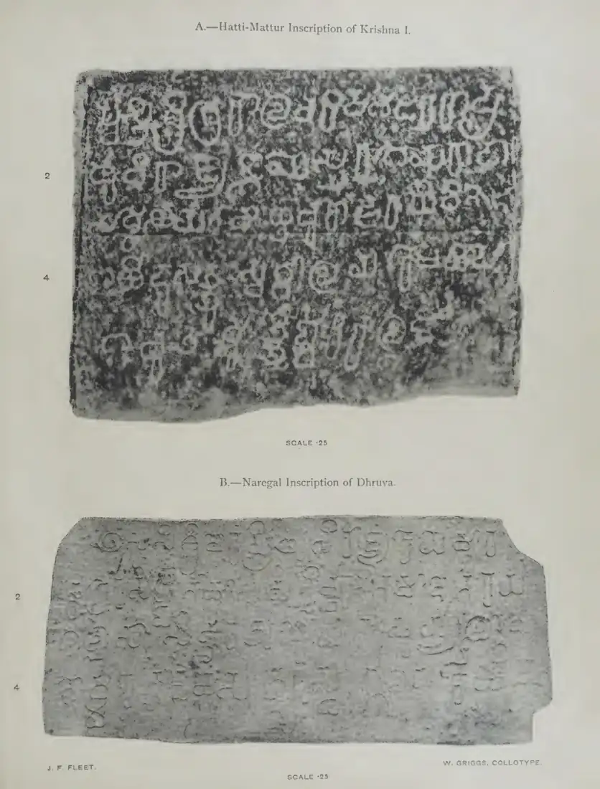
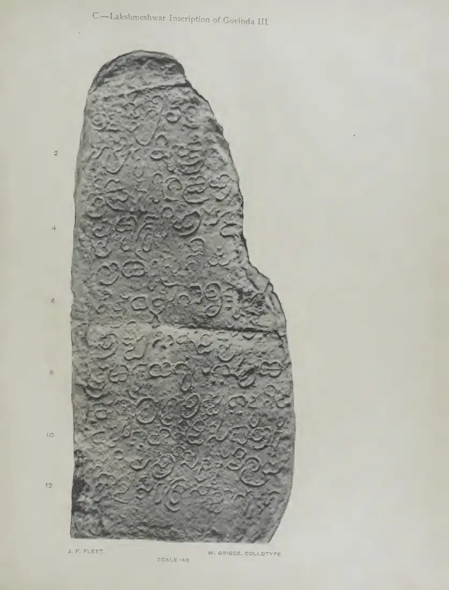

Some Records of the Rashtrakuta Kings of Malkhed
SOME RECORDS OF THE RASHTRAKUTA KINGS OF MALKHED.
By J. F. FLEET, I.C.S. (RETD.), PH.D., C.I.E.
This is the first of some papers which will deal with some selected records of the Ráshtrakúṭa kings of Málkhéđ. The records have been chosen, partly because of the general historical interest that attaches to them, and partly in order to illustrate the development of the alphabet of the Kanarese country during the ninth century A.D.3 As regards the latter point, I cannot undertake to deal fully with all the palæographic details: to do so, would be beyond my particular sphere of work, and would occupy time which I prefer to devote to other matters of wider interest; and I must leave that line of inquiry to be dealt with, in its minute particulars, by anyone who is more concerned than I am with the special illustration of Indian palæography. I shall notice a few details that may seem of particular interest. But, for the most part, I shall only deal, on somewhat broad lines, with certain characters which furnish leading tests in determining the sequence and approximate dates of undated genuine records which belong to the period in question or may fall within about half a century before it, and in arriving at some conclusion as to the order in which certain spurious records were fabricated and the periods to which they are really to be referred.
A.—Hattī-Mattúr inscription of the time of Krīshṇa I.
This inscription is now brought to notice for the first time. I edit it, and the collotype is given, from an ink-impression obtained by me in 1882.
1 The r of rkka is indistinct.
2 The anusvára stands at the beginning of the next line; read नंदि०.
3 See some remarks on pages 74, 77, above.
Hattī-Mattūr, or “cotton-Mattūr,”—evidently so called to distinguish it from a neighbouring village, which seems to be known either as simply Mattūr, or as Đombara-Mattūr, “Mattūr of the Đòms or Gipsies,”—is a village about six miles N.-N.-W. from Karajgi, the head-quarters of the Karajgi tâluka of the Dhârwâr district. The Indian Atlas sheet No. 42 (1827) shews it as ‘Huttee Muttoor.’ It is mentioned, by its full appellation, in the Bhairanmaṭti inscription of the period A.D. 1069 to 1076, which speaks of the (measuring)-rod of Pattiya-Mattaūra.1 The present record mentions a village named Maltavur, which may be either Hatti-Mattūr itself, or the other Mattūr, which is three miles and a half S.-E.-by-E. from Hatti-Mattūr. The inscription is on a vîrgal or monumental tablet, on the bank of the tank at Hatti-Mattūr.
The upper part of the stone is occupied by sculptures, which shew, in the centre, a linga, with a priest standing to it; on the proper right, the bull Nandi, with the sun above it; and on the proper left, a cow and calf, with the moon above them.—The writing, which is in a state of good preservation, covers an area about 1' 11 1/2" broad by 1' 5 1/2" high.—The characters are Kanarese, boldly formed and well executed. The size of them2 ranges from about 1" in the é of éridor, line 4, to about 1 5/8" in the i of ivu, line 5; and the śrī in line 1 is about 3 2/3" high. The characters include final forms, or forms with the vîráma attached, of r in lines 3 and 4, and of l in lines 3 and 5. As regards the palæography,—the kh does not occur. The j and the n̄ occur in râjjyañ, line 2, Nos. 4 and 5; and they are both of the old square type, closed. The b occurs in irbbara, line 5, No. 6, and is, similarly, of the old square type, closed. The l occurs three times: it, also, is of the old square type, but with rather a marked prolongation and sweep to the right of the downstroke with which the formation of the character ended; this feature, which was the first step in the development of the later cursive type of the character, can be seen very clearly in the la of Akála, line 1, No. 6, and also in álayake, line 4.—The language is Kanarese, of the archaic type, in prose.—The orthography does not present anything calling for comment.
The inscription refers itself to the reign of a king Akálavarsha, who, because of the locality to which the record belongs and of the standard of the characters, is to be identified with the Ráshṭrakûṭa king Akálavarsha-Šubhatunga-Kṛishna I.3 The object of it is to record the death, in some local affray, of two heroes named Dásamma and Eṛeya.
The record is not dated. But it is to be placed after A.D. 754, which date we have for Dantidurga, the predecessor of Kṛishna I., and before A.D. 783-84, which date we have for his successor. And we may place it roughly about A.D. 765.
TEXT.4
1 Above, Vol. III. p. 231.
2 See page 41 above.
3 For an account of him, see my Dynasties of the Kanarese Districts (in the Gazetteer of the Bombay Presidency, Vol. I. Part II.), p. 390.
4 From the ink-impression.
5 Read bhaṭarar.
6 We have here the use of the dative for the accusative; see page 43 above, note 5. It occurs again in line 4 of the Naregal inscription, B. below.
7 Mr. Kittel's Kannaḍa-English Dictionary gives this word with only the single t,—tammutu. It is presented again with the double tt in tammutt-irbbar in an inscription at Kûragallu (Ep. Carn. Vol. IV., Hs. 92).
TRANSLATION.
Hail ! While the Bhaṭāra,1 the glorious Akālavarsha-(Krīshṇa I.), was reigning over the earth :— In the destruction2 of the village of Maltavur, Dāsamma and Ereya, of the village of Surageyur,3 pierced (some of their foes) and died4 and ascended to heaven. These are the stones of those two men themselves.5
B.— Naregal inscription of the time of Dhruva.
This inscription was brought to notice by me in 1895 or 1896, in my Dynasties of the Kanarese Districts, p. 394, note 3. It is now edited for the first time. I edit it, and the collotype is given, from a plain uninked estampage sent to me in 1882 by Mr. Govind Gangadhar Deshpande.6
Naregal is a village about eleven miles E.-N.-E. from Hângal, the head-quarters of the Hângal tâluka of the Dhârwâr district. The Indian Atlas sheet No. 42 (1827) shews it as 'Neirgul.' The record gives its old name in the form of Nareyangal, and tacitly places it in the Banavâsi twelve-thousand province. The inscription is on a vîrgal or monumental tablet, found on, and apparently built into the wall of, the sluice of the tank.
I have no information as to whether there are any sculptures on this stone.— The writing covers an area about 2' 2½" broad by 1' 0" high, and is in a state of excellent preservation throughout.— The characters are Kanarese, boldly formed and well executed. The size of them ranges from about 7/8" in the th of prithuvi, line 1, to about 1 3/4" in the upper t of sattu, line 4; and the rgg of svargg, line 4, is about 3 3/8" high. The characters include final forms of n (damaged) in line 4, and of l in line 3; and the distinct form of the lingual d7 is clearly recognisable in Kâđavam, line 4. As regards the palaeography,— the kh and ñ do not occur. The j occurs in râjyam, line 1, No. 11, and is of the old square type, closed; and so, also, is the b, which we have in Bbanamâsi, line 2, No. 5. The l occurs in three syllables, and is perhaps seen most clearly in the lo of puyyaloł, line 3, No. 13: it, also, is of the old square type; it does not present, here, the marked prolongation and sweep to the right of the downstroke which we have met with in the Hattî-Mattûr inscription, A. above; and the downstroke is closed in onto the body of the letter, towards the bottom. As regards the way in which the vowel o is formed in the same word, puyyaloł, see page 164 below.— The language is Kanarese, of the archaic type, in prose. The record gives us, in line 4, Domma, as another form of Domba, = Domba, 'a
1 This word,— a title of paramount sovereignty, as used here,— occurs sometimes with the double tł, bhaṭāra, in which form, only, it is given in Monier-Williams' Sanskrit Dictionary, new edition, with the meanings of 'a noble lord (= pûjya); honourable.' For other instances of the use of the title, see Dyn. Kan. Distrs. pp. 368, 393, 394, 402.
2 Compare the Batgere inscription of A.D. 888— (in a continuation of this paper),— which describes Sâdêva as "destroying" Baṭṭakeçe. The expression ûr-aļivu, 'village-destruction,' occurs again in a record of A.D. 1092 at Srîrangpur in the Belgaum district, which mentions Jakkivdād=ûr-aļivu, "the village-destruction of Jakkivâda." And we have it, practically, again in an inscription at Kuđakûru (Ep. Carn. Vol. IV., Hs. 50), where, however, the translator has confused aļivu with adavi, adivi, and has rendered Peļtiyûr=aļivinoł by "in the Peļtiyûr forest."
3 This is, perhaps, the modern 'Surangi,' which the Bombay Postal Directory places somewhere in the Karajgi tâluka.
4 Or "were pierced and died."
5 There are or were, then, two memorial tablets at this place,— the second of them perhaps without any writing on it.
6 I regret that I had forgotten this, and did not turn up my note of it in time to indicate the fact below the collotype.
7 See page 41 above.
Plate 1 is bound after this page.
tumbler, a man of low caste, a Dôm or Gipsy ;1 and— (unless we should take turupina to be a mistake for turuvina)— in line 3 it gives us turupu, either as a variant of turu, ‘a cow, kine,’ or as the Kanarese form of some original Drâviđian word which has given us, in Tamil, toruvu, ‘a crowd, a herd of cows.’— The orthography does not present anything calling for comment.
The inscription refers itself to the reign of a king named Dôra, who is to be identified with the Râshṭrakúṭa king Dhruva, son and successor of Krìshṇa I.:2 his name occurs in the Prâkrpit form of Dhôra in, for instance, the Waṇî grant of A.D. 807;3 and the form Dôra, which we have in the present record, is to be taken as a corruption of Dhôra.4 The record mentions also a certain Mârakkarasa, who was governing the Banavâsi twelve-thousand province,— of course, as a feudatory of Dhruva. The object of the inscription is to commemorate the death, on the occasion of a cattle-raid, of a local hero named Dommara-Kâđava, “ Kâđava of the Dombas or Gipsies.”
The record is not dated. But, as we have for Dhruva the date of A.D. 783-84,5 it may be placed roughly about A.D. 780.
TEXT.6
| 1 Ôm7 | Svasti | Śrî-Dôram | prithuvi-râjyam-keye | Mâra-8 |
| 2 | kka-arasar- | Bbanamâ(vâ)si-pannirchchârasinum9=âle | Nareyam- | |
| 3 | galla | sâsirvvara | turupina | puyyalol |
| 4 | Dommara-Kâđavam | sattu | svargg-[â*]layakk10=êridan [||*] |
TRANSLATION.
Ôm! Hail! While the glorious Dôra was reigning over the earth, and while Mârakkarasa was governing the Banavâsi twelve-thousand:— In the fight11 about the cows12 of the thousand (Mahâjanas)(?) of Nareyangal, Dommara-Kâđava died and ascended to heaven.
C.— Lakshmêshwar inscription of the time of Śrîvallabha.
This inscription was brought to notice by me in 1882, in Ind. Ant. Vol. XI. p. 156, from an indistinct ink-impression which led me to speak of it then as only a fragment not capable of being edited. It is now edited for the first time. I edit it from a plain uninked estampage and an inked impression obtained by me in 1892. The collotype is from the estampage, which is better adapted for reproduction than is the ink-impression. In the title of the collotype, “ Śrîvallabha ” should be substituted for “ Gôvinda III.”13
1 The word domba, đomba,— which, through the form đoma, gives the origin of the Gipsy expression Romany-Rye, “a Gipsy gentleman,” = Dômani rây, “a king of the Dôms” (see Ind. Ant. Vol. XV. p. 15),— occurs with both the lingual d and the dental d; but more usually, I think, with the lingual d. In the present case, however, we seem to have clearly in domma the dental d. A Domma figures in the Anamkonđ inscription of A.D. 1163, among the foes of the Kâkatya king Rudradêva (Ind. Ant. Vol. XI. pp. 10, 17).
2 Dyn. Kan. Distrs. p. 393.
3 Ind. Ant. Vol. XI. p. 157, text line 6.
4 Compare the name Dôrayya,— equivalent to Dhôrayya,— in an inscription at Kuđakûru (Ep. Carn. Vol. IV., Hs. 50).
5 See page 195 ff. below.
6 From the estampage.
7 Represented by a plain symbol.
8 Nothing is wanting after this syllable. The irregular corners of the estampage, here and at the bottom, are apparently due to projecting masonry work.
9 Read pannirchchâsiraman. The u of the last syllable is quite clear in the estampage, though it is hardly recognisable in the collotype.
10 See page 161 above, note 6.
12 See at the top of this page.
11 Lit. “in the beating, striking, etc.”
13 See page 165 below, and note 3.
Lakshmêshwar is a well known town, the head-quarters of the Lakshmêshwar subdivision of the Senior Miraj State, within the limits of the Dhârwâr district. The Indian Atlas sheet No. 41 (1852) shews it as 'Lukmeshwur,' in lat. 15° 7', long. 75° 31'. The record mentions it by the old name of Purigere. The inscription is on a stone which is stored, with various other inscribed stones, at the kachêri. I have no information as to where it was found. And there is nothing to explain why a stone of so irregular a shape should have been used for a formal record.
There are not any sculptures on this stone.—The writing covers an area ranging from about 5" broad in line 1 to about 9" in line 10 and about 1' 6½" high, with blank spaces at the top and bottom as if for the purpose of setting it in a wall. It is in a state of fairly good preservation.—The characters are Kanarese, well formed and well executed. The size of them ranges from about ½" in the ya of Bâranâsiya in line 11 to about ¾" in the n of nâlvattu, line 6; and the srî in line 1 is about 2¼" high, on the slant. They include a final form of m, in line 12, which, however, is damaged and does not appear clearly in the collotype. The distinct form of the lingual d is clearly recognisable in kiđisido, line 10. As regards the palæography,—the kh does not occur. The j occurs in the word râjjañ, line 2, No. 6, and is of the old square type, closed. The ñ occurs in the same word, and again in mâruñ, line 4; it presents the old square type, closed, corresponding to the j, and shews a somewhat unusually marked extension, to the right, of what is ordinarily only a very slight projection or knob in the centre of the letter: it is seen most clearly in the ñké of mâruñ-kêriyâ, line 4, No. 3. The b occurs in line 1 in ballahañ, and again in line 10 in Bâranâsiya; it, also, is of the old square type, closed, though the actual forms are considerably rounded off: it is seen best in the ba of ballahañ, line 1, No. 5. The l occurs six times, and is, similarly, of the old square type throughout, though, as with the b, the actual forms are rounded off; it is seen most clearly in the lva of nâlvattu, line 6, No. 6, where the downstroke is closed in onto the body of the letter, and in kavileya[ñ], line 11, where it is not closed in. In the lô of lôkakke, line 12, which is clearer in the estampage than in the collotype, we have the same form of the akshara that we have in, for instance, sakalôttarâ in line 9 of the Vakkalêri grant of Kîrtivarman II. of A.D. 757,1 and, earlier, in lôkakke in line 10 of one of the Patṭadakal inscriptions of Vikramâditya II. of the period A.D. 733 to 747;2 it is a somewhat cursively formed variety (but preserving the old square type of the l, and not introducing any approach to the later cursive type) of the old square lô which we have in lôkahs in line 3 of the Aihole inscription of Pulakêsin II. of A.D. 634-35,3 and in Lôkamahâdêviyarâ in line 3 of the companion Patṭadakal inscription of Vikramâditya II.,4 and which appears again in modaloļ in line 9 of the Kanarese grant of Gôvinda III. of A.D. 804,5 where, however, there is the difference that the side-stroke which converts le or lé into lo or lô is turned downwards: and the lô as formed in this Lakshmêshwar inscription, by a modification of the upper part of the l, is more archaic than the lo of puyyaloļ in line 3 of the Naregal inscription, B. above, which is probably earlier in date; the vowel is there represented, not by a modification of the upper part of the l itself, but by two distinct vowel-marks attached before and after the entire l. On the other hand, in the present record, in kavileya[ñ], line 11, the e is formed by a vowel-mark attached to the entire l, instead of being denoted by a modification of the upper part of the l itself, according to the archaic custom, as, for instance, in kâlé in line 16 of the Aihole inscription of Pulakêsin II. of A.D. 634-35.6 In geyye, line 3, the subscript y is represented, very exceptionally,
1 Above, Vol. V. p. 202, and Plate.
2 Ind. Ant. Vol. X. p. 164, No. 99, and Plate.
3 Page 4 above, and Plate.
4 Ind. Ant. Vol. X. p. 164, No. 100, and Plate.
5 Ind. Ant. Vol. XI. p. 127, and Plate.
6 Page 7 above, and Plate; and see note 6 on page 5. The proper difference between li and le, lé, seems to have been that in li the i should be denoted by a circle on the top of the straight part of the upstroke of the l, and that in le, lé, the vowel should be denoted by turning in the curve of the top of the letter to meet the top of the straight part of the upstroke.
by an ordinary y (but without the top-stroke) attached below the upper y, instead of by the usual subscript form which we have in the preceding word rájyañ: I cannot quote any similar instance in so late a record;1 and it seems to be here a freak.—The language is Kanarese, of the archaic type, in prose. The record gives us, in line 1-2, ballaha, as a Prâkrît form of the Sanskrit vallabha; in line 4-5, paṭtagára, as a variant of paṭakára, ‘a weaver;’ in line 5, sêniya, ‘a (head)-man of a guild,’ from sêni, = śrêni, + a (3), with which we have to compare náda, ‘a (head)-man of a district,’ from nád, náđu, + a (3);2 in lines 7 and 9, sâmpu, which seems to mean ‘a length (of cloth or silk),’ and to be another variant of châpu, ‘stretch, length, extent,’ jápu, ‘the measure of a long stride,’ and dápu, ‘stretch, etc., the measure of a stride;’ and in line 8, kelagu (with the copulative affix), as a variant of kelagu, ‘under, down, below.’—The orthography does not present anything calling for comment.
The inscription refers itself to the reign of a king whom it mentions by only the biruda Śríballaha, that is to say Śrívallabha. On palæographic grounds, it is to be placed in the last quarter of the eighth century A.D. For that reason, coupled with the locality to which it belongs, it is unquestionably a Râshtrakúta record. And this king Śrívallabha is, in all probability, to be identified with the Râshtrakúta king Dhruva: the only alternative is that he is Dhruva’s son Gôvinda III.; but, in spite of what has previously been thought, it now appears very questionable whether Gôvinda III. was so specifically well known by the biruda Śrívallabha as was his father Dhruva.3 The object of the inscription is to record that the head-man of the guild of the weavers of the múruñkêri4 of Purigere-(Lakshmêshwar)
1 It was the ancient way of forming the subscript y; see the Junágadh inscription of Rudradâman, in the word mahâkshatrapasya near the end of line 3, and in other places (Archæol. Surv. West. Ind. Vol. II. p. 128, and Plate).
2 For an instance of the word náda, see page 71 above, note 2.
3 When I first brought this inscription to notice, I treated it as a record of the reign of Gôvinda III. At that time, in dealing with the Râshtrakútas I was chiefly following the lead of Dr. Bübler. His Table of the Râshtrakútas shewed the biruda Śrívallabha for only Gôvinda III.; see Ind. Ant. Vol. VI. p. 72, and his remarks (ibid. p. 64) in his introduction to the Râdhanpur grant which he was then editing, and his translation (ibid. p. 71) of the passages from which he took the biruda. And, as a matter of fact, it is only recently,—since the time when the collotype of this record, now issued, was prepared and titled,—that it could be recognised that this biruda, when used in a Râshtrakúta record, referable to an indefinite date in the period A.D. 775 to 800, in the special manner in which it is used in this record, does not by any means necessarily denote Gôvinda III. On this point, see further on, under the use of the biruda Śrívallabha in the Râshtrakúta records.
4 This word múruñkêri, — or múruñ-kêri, as actually written in this record, with the guttural nasal instead of the anusvára,— would mean, by literal translation, ‘three streets.’ But it seems to be a technical expression, the exact purport of which is to be found in connection with the wider meaning of ‘quarter, quarters, a division of a town,’ which kêri has in, for instance, holegêri, ‘the Holer’s quarters,’ the well known expression for that part of a village (usually outside the village itself) in which the Mahârs, Mângs, and other low-caste people dwell. I do not at present find anything, helping to explain it, in any of the other records at Lakshmêshwar. A proverbial saying, which may or may not indicate some clue, is given in the Rev. Mr. Kittel’s Kannađa-English Dictionary, under núru, namely núru dru iddarú kêri bêku, “though there be fully a hundred (persons), a street is necessary;” and it is explained to me by Mr. Kittel as meaning that a hundred persons, or more, may be a large number, but, if their houses are erected unsystematically, one here and one there, there is no proper village, and a street, along which houses are built in rows, is necessary to constitute a regular village.—It seems likely that we have a synonym of múruñkêri in another technical expression, múruñpura, of which, also, the exact purport is not apparent. Múruñpura would mean, by literal translation, ‘three towns;’ but the exact bearing of it is, no doubt, to be explained in connection with the more special meaning, which pura has, of ‘a division of a town, a ward,’ particularly in the actual names of such divisions or wards. There was a múruñpura at Bałagâmi. A record there, of A.D. 1129, likens the pañcha-mathañgal or five mathas of that place, which it specifies as the shrines of Hari (Vishnu), Hara (Šiva), Kamalâsana (Brahman), Vîtarâga (Jinêndra), and Bauddha (Buddha), to the five-fold string of pearls of the Earth, and likens the múruñ-purañgal, which it calls alliya múruñ-kangał or “the three eyes of that place,” to three strings of pearls on the neck of that same lovely woman (the Earth), who is thus superior to even the perfect Lakshmî (P. S. O.-C. Inscrs. No. 178, lines 43 to 46, and see Mysore Inscrs. p. 90). Also, a record of A.D. 1181, at the same place, mentions a certain Sâvidêva, who is described as—nagara-pañchamaṭha-múruñpurada saudo(?)re-herggade,— “the Saudore(?)-Hergade of the nagara and the
made a religious grant, in the form of a proportionate quantity of the goods turned out by the weavers,— doubtless for the purposes of some temple, not mentioned in the record, at which the stone must have been set up.
The record is not dated. But, selecting a year which suits both the palæographic standard of the characters and the bare possibility of the inscription being of the time, not of Dhruva, but of Gôvinda III., for whom we have the date of A.D. 794 from the Paiṭhaṇ grant,1 we may place it about A.D. 793.
TEXT.2
- 1 Ôm3 Svasti Śriballa-
- 2 haṇ prithuvī-râjya-
- 3 ṇ-geyye Purigereṣâ
- 4 mûruṇ-kêriṣâ paṭṭa-
- 5 gâṣara sêṇī(ṇi)ya-
- 6 n=itta dharmma nâlvattu
- 7 sâmpino!=ondu mûva-
- 8 ttaṣra kelaguṇ i[n]û-
- 9 ṣa mêluṇ are-sâmpu [||*] Idu ni[l]u-
- 10 davu4 [||*] Idâṇ=kiñisido[m*] Bâra-
- 11 ṇâsiya sâsira kavileya[m]
- 12 kondona5 lôkakke sandon=ak[k]u[m] [||*]
TRANSLATION.
Ôm! Hail! While Śriballaha was reigning over the earth :— The religious grant, that was given by the head-man of the guild of the weavers of the mûruṇkêri6 of Purigere, was one
pañchamatha and the mûruṇpura” (P. S. O.-C. Inscrs. No. 192, line 62, and see Mysore Inscrs. p. 119). And this last passage seems to separate the mûruṇpura from the nagara or city, and to mark the expression as the name for some distinct portion or portions of the township, outside the town proper. The expression mûruṇpura occurs again, with pañchamatha, in the Konnûr inscription which purports to reproduce a charter of the time of Amôghavarsha I. (page 34 above, text line 71); and it seems, therefore, that there was a mûruṇpura at Konnûr also.— I would suggest, incidentally, that the word svatala, meaning literally ‘own surface,’ which we have in Valabhī-svatala (Ind. Ant. Vol. VI. p. 15, text line 11 of plate ii., and Vol. XIV. p. 330, text line 25, and probably also in Vol. IV. p. 175, text line 7-8), is to be taken as the equivalent of nagara, and that Valabhī-svatala does mean “Valabhī proper, Valabhī within the walls,” as taken by Dr. Bühler in dealing with the first of these passages. The vihâra built by Duđdâ and situated in Valabhī-svatala according to that passage, appears to be described in another passage as situated in Valabhī-pura (Ind. Ant. Vol. VII. p. 67, text line 2 of plate ii.); and this seems to make svatala synoymous with pura in the sense of nagara. Svatala occurs again, in the case of a village called Trisatimaka (by mistake for Trisaṅgamaka) in another record of the Maitrakas of Valabhī (Jour. Bo. Br. R. As. Soc. Vol. XX. p. 9, text line 14).— Another technical expression containing mûru, ‘three,’ and requiring explanation, is mûruṇ-modalu, meaning literally ‘three beginnings, roots, bases;’ we have it in the genitive, mûruṇ-modala, qualifying mahâjanaṇ, in the Nandwâdige inscription (Ind. Ant. Vol. XII. p. 221, text line 3).
1 Above, Vol. III. p. 103.
2 From the estampage and the ink-impression.
3 Represented by a plain symbol.
4 Read nilvudu, or nilluvudu; or else read ivu, with nilvuvu or nilluvuvu.
5 This akshara, na, was at first omitted, and then was inserted below the lô of lôkakke.— For the expression kondona lôkakke, compare, e.g., Ind. Ant. Vol. X. p. 164, No. 99, line 10, where the correction kondorâ now seems unnecessary. We seem to have kondorâ lôkakke in Ind. Ant. Vol. VIII. p. 286, text line 6 (see the lithograph). The more usual, and probably more strictly grammatical expression, is konda lôkakke; see, for instance, Ind. Ant. Vol. VIII. p. 285, No. 57, text line 5, and Vol. X. p. 165, No. 101, text line 12, and p. 166, No. 102, text line 6.
6 See page 165 above, note 4.
Plate 2 is bound after this page.
(length) on (each) forty lengths; (but) below thirty, and above two hundred, half a length.1 This shall continue!
(L. 10) — Whosoever destroys this will associate himself with people who kill a thousand brown cows of Bâraṇâsi!
* * * *
The appellations of the Râshṭrakûṭas of Mâlkhêd.
This study is the outcome of some inquiries that were commenced with a view to determining exactly who may be the king Śrîvallabha, to whose time the Lakshmêshwar inscription, C. above, refers itself. For that purpose, it was necessary only to go as far as Amôghavarsha I. But some other points of interest presented themselves during the inquiry, in connection with the proper names of the kings as well as their birudas and other appellations, and it seemed useful and convenient to go through the whole dynasty. I am not sure that I have quite exhausted the subject; it is difficult to do that in dealing with so many records, edited in different works and not arranged chronologically, and some of them published in Nâgarî characters which do not adapt themselves to capitals, thick type, and other devices for catching the eye quickly. But, at any rate, I am able to put forward results that can be easily completed, at any future time, in respect of any few details that may have been overlooked here.
I may add that I commenced the inquiry with the expectation that the results would prove that the Śrîvallabha of the record in question, and of an important passage which furnishes a date, could only be Gôvinda III. The steps by which we are driven to a different conclusion on this point, will disclose themselves in due course.
Two general remarks may as well be made here. One is that, for any particular point, it is usually sufficient to refer to only that passage, the earliest in date, which first brings it forward; the value of a statement is seldom, if ever, in any way enhanced by the mere repetition of it in successive records which do no more than reproduce the exact words of earlier records. The other is that, in matters of technical detail, prose records in general, and in particular the formal preambles of the prose passages which introduce the special subject of each copper-plate charter, are obviously of more importance than any preliminary verses, in which flights of fancy were naturally permissible and were plainly sometimes indulged in, and in which absolute accuracy might at any time be made subordinate by an unskilful composer to metrical and other similar necessities.
For a complete list of the Râshṭrakûṭas of Mâlkhêd and of the first Gujarât branch, for use in connection with the remarks made in the following pages, reference may be made to the Table given by me in Vol. III. above, opposite page 54, or to the same Table in my Dynasties of the Kanarese Districts (in the Gazetteer of the Bombay Presidency, Vol. I. Part II.), opposite page 386.
The first paramount king in the dynasty of the Râshṭrakûṭas of Mâlkhêd was Dantidurga. Of his time, we have the Sâmângad grant, issued in A.D.* 754. And this record, it may be mentioned, opens the pedigree with his great-grandfather Gôvinda I., and thus carries the family back as far as do any of the subsequent records, with the exception of the inscription
1 I.e., apparently, half a length on any piece of less than thirty lengths, one length on each forty lengths up to two hundred, and then half a length on each forty above that number.
at the Dasâvatâra cave at Ellôrâ,1 which puts forward the names of Indra I. as the father, and Dantivarman I. as the grandfather, of Gôvinda I. The verse in the Sâmângaç grant which introduces Dantidurga, gives his proper name in the form of Dantidurgarâja; the formal preamble of the prose passages of the record adds dêva, and styles him Dantidurgarâjadêva;2 and a verse at the end of the record presents his name in the variant of Dantivarman, a form which rather curiously and unexpectedly crops up again, two centuries and a half later, in the Bhâdâna grant of A.D. 997,3 — (a record of one of the Śilâhâra princes of the Northern Koñkan, which recites the Râshṭrakûṭa pedigree),— without, as yet, any trace of it, in his case, in any of the intermediate records.4 The second verse in the description of Dantidurga in the Sâmângaç grant may be interpreted as giving him the biruda of Râjasimha,5 which, we now know, occurs at any rate in the case of other kings of other lines; but we have not as yet obtained any corroboration of it elsewhere in his case, and, from the first historical verse in the same record, the same biruda might be equally well established in the case of Gôvinda I., though the latter was only an ancestor and not a reigning king. Be that as it may, the formal preamble of the prose passages of the Sâmângaç grant does establish for Dantidurga the birudas of Pṛithivivallabha and Khađgâvalôka.6 And a verse in the Paiṭhan grant of
1 Cave-Temple Inscriptions (No. 10 of the brochures of the Archæological Survey of Western India), p. 92, Pandit Bhagwanlal Indraji's version; see also Archæol. Surv. West. Ind. Vol. V. p. 87, where the Pandit's text has been reproduced, in transliteration, by Dr. Bühler: the latter version has thus become the more convenient one to quote. The record is probably of the time of Amôghavarsha I.; because, after taking the early part of the pedigree as far as Dantidurga, it proceeds next to mention Amôghavarsha I., without any notice of the intermediate names. But it was left unfinished, breaking off abruptly in even the middle of a verse. And therefore we cannot say with absolute certainty that it was not composed in, and intended to run on to, a later time.
2 Ind. Ant. Vol. XI. p. 112, text lines 16 and 28, respectively.
3 Above, Vol. III. p 271, text line 4.
4 The only other known instances of this name among the Râshṭrakûṭas, are (1), as mentioned above, in the Ellôrâ inscription, which puts it forward as the name of the original ancestor of the family; (2) in the Baroda grant of A.D. 811 or 812, which mentions a Râjaputra Dantivarman who was perhaps a son of the feudatory prince Suvarṇavarsha-Karkarâja (Ind. Ant. Vol. XII. p. 161, text line 68); and (3) in the Bagumrâ grant, of doubtful authenticity, purporting to have been issued in A.D. 888, which puts it forward as the name of apparently the father of the alleged feudatory prince Akâlavarsha-Kṛishnarâja of that record (Ind. Ant. Vol. XIII. p. 69, verse 20).
5 Loc. cit. (note 2 above), text line 19; the word is there translated, by “a very lion of a king.”
6 Ibid. text lines 27, 28.—The first of these two appellations was not recognised as a formal biruda when the record was edited; and it was treated as an abbreviation of śripṛithivivallabha. But we are now able to see that a distinction must always be made between, on the one hand, Pṛithivivallabha, “favourite of the Earth,” and Śrīvallabha, “favourite of Fortune,” which were formal birudas restricted to individual cases, and, on the other hand, śripṛithivivallabha, “favourite of Fortune and of the Earth,” which was a paramount epithet of general application. A pointed instance in which the distinction between the biruda Śrīvallabha and the epithet is marked, is furnished by a passage in one of the Nausârî grants of A.D. 915, which describes Indra III. as paramabhatṭâraka-mahârâjâdhîrâja-paramêsvara-śripṛithivivallahha-Śrīvallabha-śrīman-Nityavarshanarâendradêva (Jour. Bo. Br. R. As. Soc. Vol. XVIII. p. 264, A. plate ii. 2, text lines 11, 12). And, whereas we often find the biruda Śrīvallabha, at any rate, used as a substitute for a proper name, we do not find the epithet śripṛithivivallabha used in that way.—The idea underlying both the two birudas and the epithet, was, that Fortune and the Earth were accounted actual wives of kings; and it would, therefore, be more strictly correct to render vallabha by ‘husband’ in this epithet and in these two birudas and any exactly similar ones, and there are a few passages in which it should be so rendered, in order to bring out the meaning fully: but there are other birudas and expressions, in which that particular meaning of vallabha does not apply; and it seems on the whole desirable to render the word by ‘favourite’ even in the epithet and in the birudgs in question, partly for the sake of uniformity of translation, and partly to mark the point that the original texts use vallabha and not any such word as pati, bhartri, etc. The idea is presented by Kâlidâsa, in the Raghuvamśa, i. verse 32, which says that, extensive as was his harem, the king Dilipa considered himself really provided with wives only in the persons of Sudakshinâ (his actual wedded wife) and Fortune; and — (the commentator points out) — the poet, using for ‘king’ the word vasudhâdhipa, ‘lord of the earth,’ implies that the Earth was also his wife, but his group of real wives was not complete without Fortune and Sudakshinâ. An epigraphic passage in
A.D. 794 speaks of him as Vallabharâja, “ the Vallabha king,” or, possibly, “ the king of the Vallabhas.”1 This designation however,—as also the simpler designation Vallabha,— was, not a special biruda, but an appellation of general application. The two appellations were not restricted to the Râshtrakûṭa family; and the name Vallabha does not always denote a Râshtrakûṭa even in the Râshtrakûṭa records.2 And the fuller one of them, Vallabharâja, is of interest in connection with the Râshtrakûṭas of Mâlkhêd chiefly because, through its Prâkrît forms, it explains the name, “ the Balharâs,” by which the contemporaneous Arab travellers and geographers of the ninth and tenth centuries A.D. used to speak of those kings.3 The Kađaba grant, which purports to have been issued in A.D. 813, would set up for Dantidurga the biruda of Vairamêgha,4 by which appellation alone it mentions him; but we cannot admit this as established, until we obtain some authentic confirmation of it from a record the nature of which is unquestionable.
Dantidurga was succeeded by his paternal uncle Kṛishna I. The Paiṭhaṇ grant of A.D. 794 introduces him as Kṛishnarâja, and then presents two verses which establish for him the birudas of Šubhatunga and Akâlavarsha.5 Another verse in the same record might perhaps be taken as practically speaking of him as Šrívallabha: but the appellation is there divided into two words, śriyó vallabhah,6 which is at least a very exceptional manner of putting forward any formal epithet, title, or biruda; with that passage we have to compare the descriptions, similarly in verse, of Jagattunga II. as vallabhó víra-Lakshmyâh in the Nausâri
one of the Pâla records tells us that “ Gôpâla was the husband of Fortune as well as the lord of the Earth,” or, more literally, that “ Gôpâla was a lord (pati) of the Earth who was the fellow-wife (sapatni) of Fortune” (Ind. Ant. Vol. XXI p 257, and note 55). And the Chôla records constantly utilise the idea: thus. an inscription of the twenty-ninth year of Râjakêsarivarma-Râjâdhirâja says that, “ while the goddess of the Earth was beaming under his fringed white parasol, the king wedded the goddess of Fortune” (South-Ind. Inscrs. Vol. III. p. 55); an inscription of the second year of Râjakêsarivarma-Râjamahêndra says, from the opposite point of view, that “ while the goddess of Fortune was resplendent, he wedded the great goddess of the Earth, in order that she might abide joyfully under the shade of a single parasol” (ibid. p. 114); an inscription of the fourth year of Parakêsarivarma-Râjêndradêva says that, “ while the goddess of Fortune and the great goddess of the Earth became his great queens, the king raised on high his brilliant white parasol” (ibid. p. 61); and an inscription of the twelfth year of Parakêsarivarma-Râjêndrachôla I., expanding the idea by introducing Victory as another so-called wife, and referring also to his actual wedded wife, speaks of “ his long life, in which the great goddess of the Earth, the goddess of Victory in battle, and the beautiful and matchless goddess of Fortune, who had become his great queens, gave him pleasure while his own illustrious queen was prospering” (id. Vol. I. p. 99). It may be added that we have a still more figurative expansion of the general idea, by the suggestion of a city as a wife of a king, in the verse in the Aihole inscription of A.D. 634-35 which says that Pulakêsin I., who was Šrívallabha or favourite (in this passage, more exactly, husband) of Fortune, became also the bridegroom of the town Vâtâpipuri (page 8 above, verse 7): so, also, a country is put forward, in the same way, in the description of the earliest Silâhâra princes of the Northern Konkaṇ as “ favourite of the Konkaṇ” and “ favourite of the whole Konkaṇ” (Ind. Ant. Vol. XIII. p. 134, text line 3, p. 135, line 2, p. 136, line 1-2; and, in another direction, we find Learning indicated, by the use of the word vallabha, as a wife of wise men (see page 187 below, note 10).— Both in the biruda Pṛithivivallabha and in the epithet śriprithivivallabha, the Sanskrit records use, indifferently, either prithvi or prithivi, while the Kanaree records often present the corruptions prithuvi, prithuvi, prithuvi, and prithuvi. No distinction seems to be involved. And, while giving in the present study, in each individual case, the form that is actually used, it seems desirable, for the sake of uniformity in indexing, etc., to adopt for general purposes the form prithivi, which, though it is strictly only a substitute for prithuvi, is decidedly the more familiar word of the two and also seems to be the more common term.
1 Above, Vol. III. p. 106, text line 17. As regards the alternative rendering of this appellation by “ the king of the Vallabhas,” the Tamil form Vallavar kôn, which has been translated in that way by Dr. Hultzsch (South-Ind. Inscrs. Vol. III. p. 69), occurs in a passage in a Chôla record in which it denotes the Western Châlukya king Âhavamalla-Sômêsvara I.
2 See two passages referred to on page 193 below, notes 2 and 3. See also the end of note 4 on page 190.
3 See page 190 below, and note 6.
4 Above, Vol. IV. p. 346, after verse 2; and see p. 336.
5 Above, Vol. III. p. 106, text lines 17 to 21.
6 Loc. cit. text line 26-27.
grants of A.D. 9151 and of Indra III. as rájya-śriyó bhartá in the Kardâ grant of A.D. 972;2 we do not infer from those verses that Jagattuñga II. and Indra III. were formally known as Víralakshmívallabha and Rájyaśríbhartri; in the same way, we do not take it as proved by the verse in the Paiṭhaṇ grant that Śrívallabha is established as a specific biruda of Krīshṇa I.;3 and the Waṇī grant of A.D. 807 styles him simply Vallabha.4 A verse in the Baroda grant of A.D. 811 or 812, which describes Krīshṇa I. as raining down wealth in excess of even the utmost desires of his servants,5 might be taken as conveying a hint that he had a second varsha-appellation, in the shape of Dhanavarsha:6 but, in the Kávī grant of A.D. 826 or 827,7 the same verse was made to do duty in the case of the feudatory Ráshṭrakúṭa prince Suvarṇavarsha-Karkarája of Gujarát; and it seems, therefore, that it was not intended to have any special meaning in either case. It may be added here that another verse in the Paiṭhaṇ grant tells us that Krīshṇa I. conquered in battle a certain Ráhappa, and then or thus “quickly extended the sovereignty which was resplendent with a row of pálidhvaja-banners.” It seems probable that Ráhappa was the more familiar name of the Ráshṭrakúṭa king Kakkarája II., of another branch of the family in Gujarát, who was reigning over the territory on the north of the Taptī in A.D. 757,8 or else that it was the name of his successor. And it is perhaps, in the same connection,—rather than with any reference to Dantidurga, as I have previously thought,—that we should apply the statement, in the Baroda grant of A.D. 811 or 812, that Krīshṇa I. uprooted a vamśya or “kinsman” who had taken to evil ways, and appropriated the kingdom to himself for the benefit of his family.9
Krīshṇa I. left two sons, Gôvinda II. and Dhruva. They are introduced by their proper names, as Gôvindarája and Dhruvarája, in two consecutive verses in the Paiṭhaṇ grant of A.D. 794.10 And the second verse shews that Gôvinda II. was the elder of the two brothers. A statement, which has been understood to imply that Gôvinda II. succeeded to the throne and held it for a while, is made,—and as far as all known records go, appears for the first time,—a century and a half later in the Déôlī grant of A.D. 940, which says that “sensual pleasures “made him (Gôvinda II.) careless of the kingdom; and, entrusting fully the universal “sovereignty to his younger brother Nirupama-(Dhruva), he allowed his position as sovereign to “become loose.”11 But no statement that he reigned is made in the Paiṭhaṇ grant, which is the first record after his time that puts forward details of the genealogy and succession. The verse which introduces him in that record, speaks, it is true, of his white umbrella with which the rays of the sun were warded off from his head as he moved in battle, and says that he conquered the world, and talks of his causing widowhood to the wives of his enemies and of his bursting asunder in war the temples of the elephants of his foes. These, however, are merely vague poetical statements, introduced to eke out the verse that first mentions him, of no more
1 Jour. Bo. Br. R. As. Soc. Vol. XVIII.; the words are rendered in the translation (p. 267) by “the beloved of the soldierly Lakshmi.”
2 Ind. Ant. Vol. XII. p. 265, text line 19.
3 The verse, in fact, simply reproduces one part of the general idea (see note 6 on page 168 above), and incidentally describes Krīshṇa I. as being, among other things, a husband of Fortune; much in the same way, as a verse in the Baroda grant of A.D. 811 or 812 (Ind. Ant. Vol. XII. p. 159, text lines 21, 22) says of Dhruva that “bearing in mind, personally, that whatever is appropriate should be done in securing Lakshmi, he was always successful; but what was there wonderful in that?, since any man, who does not look about for assistance (and thus create factitious difficulties), is able to make his own wife subject to his control:” this latter verse intimates that Dhruva was, in his turn, a lawful husband of Fortune; but it does not establish for Dhruva any biruda based on that idea.
4 Ind. Ant. Vol. XI. p. 157, text line 5.
5 Ind. Ant. Vol. XII. p. 159, text lines 11, 12.
6 Just as Gôvinda IV. had the two birudas of Prabhútavarsha and Suvarṇavarsha.
7 Ind. Ant. Vol. V. p. 147, verse 33.
8 See Dyn. Kaṇ. Distrs. pp. 391, 392.
9 Ind. Ant. Vol. XII. p. 162.
10 Above, Vol. III. p. 107, text lines 27 to 30.
11 Above, Vol. V. p. 193, verse 10; for the translation which I use, see the rendering of the same verse as verse 11 in the Karhád grant of A.D. 958 (above, Vol. IV. p. 287).
specific purport and value than are the very similar statements that are made in the same record about Gôvinda I. and Indra I., who were not reigning kings, but were simply ancestors of the first reigning king. And the Waṇi grant of A.D. 807, which is the next record of the same kind, specifically tells us that Dhruva obtained the sovereignty by “leaping over his elder brother (jyêshth-ôllanghana),” whose name it does not even take the trouble to mention.1 This is a most distinct assertion that Dhruva superseded his elder brother altogether. And further light is thrown on the matter by another passage in the Paithan grant,2 which says that Gôvinda II. fetched in large numbers even hostile kings,—the ruler of Mâlava and others, the lord of Kâñchi, the Ganga, and him of Veṅgi,—but the mind of Dhruva, after that he had possessed himself of his ruby-ornaments and store of gold, underwent no change in regard to him; and then, having made conciliatory overtures to him in vain, Dhruva speedily defeated him in battle, and drove away the eastern and the northern opponents,3 and thus “obtained the whole sovereignty.” This makes it clear that Gôvinda II. did not submit quietly to being deprived of his rights. And we have, perhaps, an intimation that he established himself in the northern territory, while Dhruva set himself up as his rival in the south, and that time elapsed before Dhruva made himself master of the whole kingdom. But it is plain that, at the best, Gôvinda II. made a stand for only a short time. And it seems more probable that the passage simply seeks to describe him, as Pulakêsin II. is described in the Aihole record, as engaging in the act called aparuddhacharita, that is to say, wandering abroad, debarred altogether from his rights, and endeavouring to obtain them by the help of other rulers.4 The statement made in the Waṇi grant would not be inconsistent with the possibility that Gôvinda II. was the intended successor of Kṛishna I. Also, we have not as yet found, in any of the records, any statements in respect of Dhruva similar to those which are made in respect of his son and successor Gôvinda III.; namely, in the Râdhanpur grant,5 that Gôvinda III. received from his father the kaṇthikâ or necklet (which was the badge of appointment as Yuvarája), but protested against a transfer of the sovereignty itself to him while his father was still alive, and, in the Paithan grant, that he was chosen for the succession out of several sons, because he surpassed his brothers in merit. We, therefore, cannot say that the succession was not intended to pass, at this point, from the father, Kṛishna I., to the elder son, Gôvinda II. And the pointed expression used in the Waṇi grant is, in fact, rather suggestive that, not only was Gôvinda II. the intended successor, but also the appointment of him as Yuvarája had actually been made. We naturally, however, follow the information furnished by the Paithan and Waṇi grants, which are so near in time to the events themselves, in preference to a loose statement, which first appears a century and a half later, in a record which does not follow any of the ancient drafts but presents an altogether new composition. If, indeed, that statement could be looked upon as authoritative at all, it might be interpreted, just as readily, as meaning that Gôvinda II. was so much engrossed in sensual pleasures that he was altogether indifferent about the sovereignty and deliberately allowed Dhruva to usurp it, which, however, we know from the Paithan grant was not the case. But, obviously, the statement owes its existence to nothing but the fact, which we can recognise from also other independent drafts, that the name of Gôvinda II. had been duly preserved in the vaṁsávali and archives of the dynasty, and to a flight of fancy on the part of the composer of the draft that was followed in that record, who, differing from the composers of some other drafts, thought it worth while to mention Gôvinda II., and said about him the first thing that came into his head and sufficed to fill out a verse with some
1 Ind. Ant. Vol. XI. p. 157, text line 7.
2 For the literal full translation, see above, Vol. III. p. 104.
3 The Gangas, then, in the south, apparently remained to be dealt with on a subsequent occasion.
4 See Professor Kielhorn's explanation of the technical term in question (page 9 above, note 2).
5 In the Waṇi grant, which is slightly earlier in date, part of this passage was carelessly omitted, and two complete verses, of four pádas each, were combined into one verse with the exceptional number of five pádas.
kind of a suggestion as to why the succession passed to the younger brother.1 And the conclusion at which we arrive from the authoritative early records, is, that Dhruva set himself up as king immediately on the death of Krīshṇa I., and that Gôvinda II. had not any real part at all in the succession.2 The Kađaba grant, which purports to have been issued in A.D. 813, would set up for Gôvinda II. the biruda of Prabhûtavarsha.3 But we do not accept this, until we find it in some unquestionable record. And the only secondary appellation that is as yet established for him, is that of Vallabha; it is supplied by the Paithaṇ grant, which, in the first verse that mentions him, says that he was Gôvindarāja who had the âkhyá or name of Vallabha, and, in the other passage, uses that name to denote him.
The successor, then, of Krīshṇa I. was his younger son Dhruva. The Paithaṇ grant of A.D. 794, of his son and successor Gôvinda III., mentions him, in the verses, by the name of Dhruvarāja and the biruda of Nirupama;4 and the formal preamble of the prose part of it further establishes for him the biruda of Dhârâvarsha, because, using a certain technical expression of very constant occurrence, it describes Gôvinda III. as meditating on the feet of the Paramabhaṭtāraka, Mahârájádhirája, and Paramésvara Dhârâvarshadêva.5 A verse in the Waṇi grant of A.D. 807 gives his proper name in the Prâkṛit form of Dhôra,6 though a subsequent verse in the same record gives it in the usual Sanskṛit form of Dhruva;7 and an intermediate verse in the same record further establishes for him the biruda of Kalivallabha.8 In the Patṭadakal inscription of his time, he is designated Dhârâvarsha and Kaliballaha,9 — the latter being the Prâkṛit form of Kalivallabha. And the Naregal inscription gives Dôra, as another variety of the Prâkṛit form of his proper name.10 Another important biruda of his, Śrīvallabha, will be brought forward further on. A verse in the Sânglī grant of A.D. 933
1 We have a similar flight of fancy, or at any rate an unquestionably erroneous statement, in the assertion made in the Śilâhâra Bhâdâna grant of A.D. 997, that Amôghavarsha II. reigned for a year; see page 176 below.
2 The other Râshtrakúṭa records which deal with this part of the genealogy and succession, treat Gôvinda II. as follows. The Râdhanpur grant of A.D. 807 follows the draft of the Waṇi grant, and refers to him, in the same way, only as the unnamed elder brother whom Dhruva superseded (Ind. Ant. Vol. VI. p. 69, verse 5). The Baroda grant of A.D. 811 or 812 passes him over without any allusion of any kind (Ind. Ant. Vol. XII. pp. 162, 163); and so does the Kâpadṇapaj grant of A.D. 909 or 910 (Ep. Ind. Vol. I. p. 56); and so also, do even the Nausârî grants of A.D. 915 (Jour. Bo. Br. R. As. Soc. Vol. XVIII. p. 266), which aim at presenting the whole line from Dantidurga to Indra III., with the first rudimentary introduction of a Purânic preface. The Nausârî grant of A.D. 817 (Jour. Bo. Br. R. As. Soc. Vol. XX. pp. 144, 145, verses 18, 19), and the Kâvî grant of A.D. 826 or 827 (Ind. Ant. Vol. V. pp. 149, 150, verses 18, 19), and the Baroda grant of A.D. 634 or 835 (id. Vol. XIV. p. 201, verses 2, 3), and the Bagumrâ grant of A.D. 866 or 867 (id. Vol. XII. p. 187, verses 15, 16), and the Bagumrâ grant, of doubtful authenticity, of A.D. 888 (id. Vol. XIII. p. 67, verses 9, 10), repeat the two verses which introduce the two brothers in the Paithaṇ grant, but do not include the subsequent matter stated in that record about them. The Sânglī grant of A.D. 933 mentions Gôvinda II. between his father Krīshṇa I. and his younger brother Nirupama-(Dhruva), but does not make any assertion that he reigned (Ind. Ant. Vol. XII. p. 252). The Karhâd grant of A.D. 959 follows the draft of the Dêôlī grant of A.D. 940, and so repeats the statement that sensual plensures made him careless of the kingdom, etc. (above, Vol. IV. p. 287, verse 11). And the Kardâ grant of A.D. 972 mentions him between his father and his younger brother, but does not revive the statement that is made in the Dêôlī and Karhâd grants, and does not say anything else tending to suggest that he reigned (Ind. Ant. Vol. XII. p. 267).
3 Above, Vol. IV. p. 342, line 40.
4 Above, Vol. III. p. 107, text lines 29, 35, 37.
5 Ibid. p. 108, text lines 42, 43. It seems that the biruda was actually written there, carelessly, as Dhârâvatsadêva. If any doubt should be entertained as to what was really intended, reference may be made to the corresponding passages in the Waṇi and Râdhanpur. grants, both of which, it may be added, give the biruda with the ending dêva, just as the Paithaṇ record does.
6 Ind. Ant. Vol. XI. p. 157, text line 6.
7 Loc. cit. text line 26. When this passage was translated, and, before it, the same passage in the Râdhanpur grant (Ind. Ant. Vol. VI. p. 70, verse 17), the fact that the word is here a proper name was not recognised, and it was rendered, with the following iva, by “already.”
8 Ibid. text line 14. Regarding the meaning of this biruda, which had evidently been misunderstood both by Dr. Bühler and by myself, see page 105 above, note 9.
9 Ind. Ant. Vol. XI. p. 125, text lines 1, 2.
10 Page 163 above, text line 1.
seems clearly to intend to allot to him the biruda of Iddhatêjas, because it speaks of him as “the king Iddhatêjas, who had the other name of Nirupama,”1 instead of using such a construction that the word might be taken as an ordinary adjective qualifying râjâ; but it is very problematical whether there is anything authentic about that appellation, appearing, as it does, for the first time at that late date.
Dhruva was succeeded by his son Gôvinda III. His Paithaṇ grant of A.D. 794 introduces him, in verse, as Gôvindarâja, son of Nirupama, and tells us that he was chosen for the succession out of several sons, because he surpassed his brothers in merit; and, in the preamble of the prose passages, it denotes him by the birudas of Pṛithvivallabha and Prabhûtavarsha, in combination with a third appellation Śrîvallabhanarèndradêva, which apparently uses the biruda Śrîvallabha, and which, in that case, is to be rendered by “his majesty the king Śrîvallabha.”2 His grant from the Kanarese country, issued in A.D. 804, uses, from among his various birudas, only that of Prabhûtavarsha, and presents his proper name in the Prâkṛit form of Gôyinda.3 Like the Paithaṇ grant, his Waṇî and Râdhanpur grants of A.D. 807 do not mention any of his birudas in the verses; in the formal prose passages, the Waṇî grant uses the birudas Prabhûtavarshadêva and Pṛithvivallabha, followed by his proper name as Gôvindarâjadêva,4 while the Râdhanpur grant follows the Paithaṇ draft, and places the Pṛithvivallabha first, gives the Prabhûtavarsha without the ending dêva, and uses Śrîvallabhanarèndradêva, “his majesty the king Śrîvallabha,” instead of the proper name.5 The Baroda grant of A.D. 811 or 812, issued in his time, gives him, in verse, the biruda Kirtipurusha,6 which we meet with in the Nîlgund inscription of A.D. 866 in the form of Kirtinârâyaṇa7 more in accordance with the habitual style of the Râshṭrakûṭa birudas; and further on, in another verse, it speaks of him as Śrîvallabha.8 The Tôrkhêdê grant of A.D. 813, also issued in his
1 Ind. Ant. Vol. XII. p. 249, text lines 10,3 11.
2 For the rendering of the honorific termination narèndradêva, see page 188 below.— That the ṛri is an integral and essential part of the appellation, and not the honorific prefix,— that is to say, that Gôvinda III. really had the biruda Śrîvallabha,— seems to be established by the corresponding passage in the Râdhanpur grant of A.D. 807, which (unless we choose to assume a mistake of some kind or a piece of carelessness) intentionally repeats the ṛri, or, in other words, prefixes the honorific ṛri to the biruda Śrîvallabha. The text in that record (see Ind. Ant. Vol. VI. p. 67, plate ii. b, text lines 3, 4) runs — Pṛithvival[l*]atha-ṛrimat-Prabhûtavarsha-ṛri-Śrîvallabhanarèndradêvaḥ; using, in addition to the ṛri before Śrîvallabha, the honorific ṛrimat, which has precisely the same value, before Prabhûtavarsha. And, if it were not for that passage, there would be sufficient authority for treating the ṛri in the Paithaṇ passage as the honorific prefix, and for rendering the appellation used there by “his glorious majesty the king Vallabha,” just as we have to render ṛrimad-Vallabhanarèndradêva in the formal prose passages of records of Gôvinda IV., Kṛishaṇa III., and Kakka II. (see further on, under those kings); particularly as the Nausârî grant of A.D. 817 seems to single out Pṛithvivallabha as the special vallabha-appellation of Gôvinda III. (see further on in the text above). We should then have to treat in the same way the expression used in the Tôrkhêdê grant. And the result would go far towards cancelling the biruda Śrîvallabha altogether in the case of Gôvinda III.; in fact, the only remaining authority for it would be the verse in the Baroda grant of A.D. 811 or 812 (see further on in the text above).— On the occasional emphasising of ṛri as an integral part of proper names and birudas, see Gupta Inscriptions, p. 8, note 3, clause (3) on p. 9.
3 Ind. Ant. Vol. XI. p. 126, text line 3-4, and p. 127, text line 5.
4 Ibid. p. 159, text lines 34, 35.
5 Ind. Ant. Vol. VI. p. 67, plate ii. b, text lines 3, 4; and see note 2 above.
6 Ind. Ant. Vol. XII. p. 159, text line 24. The word was then translated by me, by “the personification of fame,” for which, however, there seems no justification.
7 Page 103 above, text line 7; and see page 106, note 1.
8 Loc. cit. (note 6 above), p. 160, text line 35.— Because Amôghavarsha I. had the biruda Lakshmîvallabha, Pandit Bhugwanlal Indraji proposed to identify the Śrîvallabha of this passage with that king, who, he suggested, was “then heir-apparent of Gôvinda” (Gazetteer of the Bombay Presidency, Vol. I. Part I. p. 124). But that identification is not tenable. The verse occurs in the account of Indrarâja of Gujarât younger brother of Gôvinda III., to whom the rule over the province of the lords of Lâṭa was given by Gôvinda III. It says that he put to flight the leader of the Gurjaras, and that the array of the Mahâsâmantas or feudatory princes of the Dakshiṇâpatha or Dekkan, terrified and not holding together in the course of having their power or
time, uses the biruda Prabhûtavarsha and Śrívallabha,—the latter with the simpler ending narèndra, Śrívallabhanarèndra, “the king Śrívallabha;” and it further establishes for him the biruda of Jagattuṅga,1 which is mentioned again in the Nîlgund inscription of A.D. 866,2 and was used alone, to denote him, in the Kañheri inscription, of A.D. 851, of the time of his successor Amôghavarsha I., who is there described as meditating on the feet of Jagattuṅgadêva.3 A verse in the Nausârî grant of A.D. 817, issued shortly after his time, can hardly be construed except as putting forward for him the biruda of Janavallabha.4 But the next verse, which says that “his other name, known or renowned in the world, was Pṛithvivallabha,” seems clearly to seek to attach some particular importance to that biruda, and, in fact, to single it out as his special vallabha-appellation. The other authentic records do not add anything. The Kađaba grant, however, which purports to have been issued in his time in A.D. 813, while introducing him as Prabhûtavarsha, denotes him further on by the appellation Vallabhèndra, instead of by that biruda or by his proper name.5
Gôvinda III. was succeeded by a son, whose proper name has not yet come to light,6 and who is known best, by his principal biruda, as Amôghavarsha I. The earliest known record of his time is the Nausârî grant, issued in A.D. 817 by the feudatory prince Suvarṇavarsha-Karkarâja of Gujarât, which introduces him by the biruda of Mahârâjaśarva, “a very Śarva (Śiva) among Mahârâjas or great kings,”7 and then, in the next verse, brings forward his more familiar biruda of Amôghavarsha; and the former of these two birudas, Mahârâjaśarva, is used to denote him in the inscription at the Daśâvatâra cave at Ellôrâ,8 a subsequent verse of which may perhaps be interpreted as putting forward for him the biruda of Râjasimha.9 The
possessions ravaged from them by Śrívallabha, obtained protection from him (Indrarâja) by shewing respect to him. There is no reason to explain this, as the Pandit did (loc. eit.) as meaning that, “in attempting to establish “himself in independent power, Indra aided certain of the Râśhtrakûṭa feudatories in an effort to shake off the “overlordship of Amôghavarsha,” or, as I myself have done (Dyn. Kan. Distr. p. 400), as meaning that “apparently in opposition to his brother and sovereign, he gave protection to some chieftains of the south, whose “possessions were taken away from them by Gôvinda III.” The passage is evidently to be taken in connection with the combination that was formed against Gôvinda III. by Stambha and eleven other princes. It is to be understood as meaning that Indrarâja helped Gôvinda III. in the north, and made the rebellious feudatories there submit to himself. And it is plainly in return for this service that Gôvinda III. gave Indrarâja the province of Lâṭa.
1 Above, Vol. III. p. 54, text lines 5, 6; as regards the Śrívallabha, see note 2 on page 173 above.—This record puts forward the Jagattuṅga in the form of Jagattuṅga, by a metrical license in adapting the verse which was used in the Paiṭhaṇ grant to put forward the biruda Śubhatuṅga for Kṛishṇa I.
2 Page 102 above, text line 6.
3 Ind. Ant. Vol. XIII. p. 134, No. 15, text line 2.
4 Jour. Bo. Br. R. As. Soc. Vol. XX. p. 138, text line 36, verse 23.
5 Above, Vol. IV. p. 343 f., text lines 63, 82.
6 Regarding some indications that we may expect to find that it either was Nârâyaṇa or Vishṇu, or else was a name beginning with Vishṇu, see page 100 above.
7 Jour. Bo. Br. R. As. Soc. Vol. XX. p. 139, text lines 43, 44.—Monier-Williams' Sanskṛit Dictionary gives Śarva as a name of a'so Vishṇu: but I do not trace the authority for that; and the word is certainly best known as a name of Śiva, apparently in one of his Rudra-manifestations (see, for instance, the Vishṇupurdṇa, Wilson's translation, Vol. I. p. 116, Vol. II. p. 24).—With this biruda Mahârâjaśarva, compare Nṛipatitriṇêtra, “a very Triṇêtra (Śiva) among kings,” in the case of Gôvinda IV., and Râjutriṇêtra, meaning the same thing, in the case of Kakka II.—If the intention of the composer of the verse had been to describe the king by a proper name as “the great king Śarva,”—according to the translation of this verse that has been put forward in the place referred to (p. 146, verse 29), and on previous occasions when the verse has been handled by others dealing with other records in which it occurs,—he ought, in conformity with epigraphic as well as grammatical usage, to have framed his verse so as to speak of him, not as Mahârâjaśarva, but as Sarvamahârâja or Sarvarâja.
8 Archæol. Surv. West. Ind. Vol. V. p. 89, text line 12.
9 Loc. eit. text line 13. This, however, is somewhat doubtful, as also in the case of Dantidurga (page 168 above), as this biruda has not as yet been explicitly found anywhere in connection with Amôghavarsha I.
Kañheri inscription of A.D. 843-44 establishes for him the biruda of Pṛithvivallabha,1 in addition to mentioning him as Amôghavarsha. The Kañheri inscription of A.D. 851 mentions him only as Amôghavarshadêva, who meditated on the feet of Jagattuṅgadêva-(Gôvinda III.).2 The Nîlgund inscription of A.D. 866 establishes for him the further birudas of Atiśayadhavala, Nṛipatuṅga, and Lakshmivallabha with the ending indra.3 And this completes the list of birudas established for him by records of his own time.4 Some of the subsequent records, however, put forward others, in respect of which we can only say that, while there may not be any very conclusive objections to them, still they cannot be taken as established until we find them in records of his own time. Thus, the Kâpaḍwaṇaj grant of A.D. 909 or 910 appears to mention him, in verse, as Mahârâjashanda, “a very bull (i.e. most powerful or pre-eminent) among Mahârâjas.”5 A verse in the Nausârî grants of A.D. 915 says that Jagattuṅga-(Gôvinda III.) begat Śrīvallabha, who subsequently became Viranârâyaṇa;6 and here we may remark that, though there may be no particular reason why Amôghavarsha I. should not have been known as Śrīvallabha, still it is quite possible that the composer of this record, which does not follow any of the early drafts, simply used, to suit his own convenience, a more familiar synonym of the special biruda Lakshmivallabha which is established by the Nîlgund record. And finally, the Śilâhâra Bhâdâna grant of A.D. 997 seems clearly to style him Durlabha, as well as Amôghavarsha.7
Amôghavarsha I. was succeeded by his son Krishna II., whose name is given as Krishnavallabha, in verse, in the Mulgund inscription of his time, dated in A.D. 902-903,8 and in the Prâkrṛit form of Kannara, in prose, in the Aihole inscription, also of his time, dated in A.D. 903.9 The Batgere inscription of his time, dated in A.D. 888,10 establishes for him the biruda of Akâlavarsha, which was evidently used, alone, to denote him in the Nandwâdige inscription of A.D. 903.11 The Bagumrâ grant, of doubtful authenticity, which purports to have been issued somewhat earlier in A.D. 888, speaks, in verse, of a certain Vallabhanṛipa or “Vallabha king,” who can hardly be anyone but Krishna II.12 And the Kâpaḍwaṇaj grant of A.D. 909 or 910 establishes for him the biruda of Śubhatuṅga,13 in addition to Akâlavarsha,
1 Ind. Ant. Vol. XIII. p. 136, No. 43 B., text line 1. I cannot help thinking that it may also mention him as Mahârâjaśarva: the apparent description of him there, immediately after his biruda Amôgbavarsha, as ṛri-mahârâja, “the glorious Mahârâja,” is not very appropriate; and where there has been read jña, in brackets as being damaged, followed by a visarga, there may possibly be the syllables jaśorva, crowded up together; moreover, the proposed genitive mahârâjñaḥ would be, according to all general usage, a mistake (for mahârâjasya).
2 Loc. oit. p. 134, No. 15, text line 2.
3 Pages 103, 104, above, text lines 8, 17, 19, and 20; in the last passage, the ending narêndradêva is attached, in prose, to the Atiśayadhavala.
4 The Sirâr inscription of A.D. 866 (Ind. Ant. Vol. XII. p. 215; for a revised version, see further on in the present selection of records) only endorses the birudas used in the Nîlgund inscription; the Kâvi grant of A.D. 826 or 827 (Ind. Ant. Vol. V. p. 144) appears not to mention him at all, for some reason or other; the Bagumrâ grant of A.D. 866 or 867 (Ind. Ant. Vol. XII. p. 179) gives only Mahârâjaśarva (verse 22) and Amôghavarsha (verses 23, 29); and the latest known record, the Kañheri inscription of A.D. 877-78 (Ind. Ant. Vol. XIII. p. 135, No. 43 A.) gives only Amôghavarshadêva.
5 Ep. Ind. Vol. I. p. 54, text line 14.
6 Jour. Bo. Br. R. As. Soc. Vol. XVIII., translation, p. 266. The biruda Viranârâyaṇa is used for him in the Konnâr inscription, which, really written in the twelfth century A.D., purports to reproduce the matter of a copper-plate charter issued in A.D. 860 (page 36 above, verse 34).
7 Above, Vol. III. p. 271, verse 4.
8 Jour. Bo. Br. R. As. Soc. Vol. X. p. 190, text line 3; and see further on in the present series of records.
9 Ind. Ant. Vol. XII. p. 222, text line 2.
10 Brought to notice in Dyn. Kan. Distrs. p. 410. It will be edited further on in this series of records.
11 Ind. Ant. Vol. XII. p. 221, text line 1.
12 Ind. Ant. Vol. XIII. p. 69, verse 23.
13 Ep. Ind. Vol. I. p. 57, verse 11.
and further seems to speak of him as Vallabharāja.1 The Hebbál inscription of A.D. 975, which is a Western Gaṅga record, would set up for him the biruda of Chalakenalláta;2 but it seems likely that it only carries it back to him, mistakenly, from his great-grandson Kṛishṇa III.
Kṛishṇa II. had a son, through whom the succession was transmitted, but who did not himself reign: his proper name has not yet come to light; and he is only known, by a biruda, as Jagattuṅga II. That he did not reign, and that the succession passed direct from Kṛishṇa II. to Indra III., is shewn by the formal preambles of the prose passages of the Nausârî grants of A.D. 915, which describe Nityavarshanarèndradêva-(Indra III.) as meditating on the feet of Akálavarshadêva-(Kṛishṇa II.).3
Kṛishṇa II., then, was succeeded by his grandson Indra III., son of Jagattuṅga II. His Nausârî grants of A.D. 915 mention him, in the verses, first by the birudas of Raṭṭakandarpadêva and Kīrtinārāyaṇa, and then by the proper name of Indrarāja;4 and, in the formal preambles of the prose passages, one of them mentions him by the birudas of Śrivallabha and Nityavarsha, the latter with the ending narèndradêva,5 — Nityavarshanarèndradêva, “his majesty the king Nityavarsha,” while the other omits the Śrivallabha and mentions him as only Nityavarsha, again with the same honorific ending.6 The Hattî-Mattûr inscription of his time, dated in A.D. 916-17, mentions him by only the biruda of Nityavarsha;7 and so also does an inscription at Lakshmêshwar, dated in the same year.8 To the preceding birudas, established by the records of his own time, a verse in the Sânglî grant of A.D. 933, issued after his time, adds that of Râjamârtaṇḍa,9 which seems probable and admissible.
Indra III. had two sons. The proper name of the elder one has not yet come to light; and he is only known as Amôghavarsha II., by the biruda by which he is mentioned in the Dêôlî grant of A.D. 940 and the Karhâḍ grant of A.D. 959:10 the Sânglî grant of A.D. 933 merely refers to him as the elder brother of Gôvinda IV., without mentioning him by any appellation at all.11 A later and extranecus record, the Śilâhâra Bhâdâna grant of A.D. 997, asserts that he reigned for one year.12 But no such statement is made in the Dêôlî and Karhâḍ records. And, that there was no basis of truth for the assertion, is distinctly proved by
1 Loc. cit. (see note 13 on page 175 above), verse 20. If so, the verse seems to refer to seven hundred and fifty villages, which constituted his private personal estate. But it is possible that the reference here is to the feudatory prince Akálavarsha-Kṛishṇarāja, whose existence is set up by the Bagumrâ grant purporting to have been issued in A.D. 888 (see note 12 on page 175 above).
2 Above, Vol. IV. p. 352, text line 2.
8 See notes 5, 6, below.
4 Jour. Bo. Br. R. As. Soc. Vol. XVIII. p. 259, B., plate ii. b, text lines 5, 7, 9, and p. 263, A., plate ii. b, text lines 2, 5-6, 8. The translation gives Viranārāyaṇa, by mistake for Kīrtinārāyaṇa.
5 Loc. cit. p. 264, A., plate ii. b, text line 12; and see page 168 above, note 6.
6 Loc. cit. p. 259, B., plate ii. b, text line 13.
7 Ind. Ant. Vol. XII. p. 224, text line 1.
8 Not yet published; I quote from an ink-impression. The details of the date include Ādityavâra, the tenth tithi of the bright fortnight of, perhaps, [Bhâdra]pada; but only the last two syllables of the name of the month remain, and they are very doubtful. In this record, the saṅvatsara, Dhâta (for Dhâtu, or Dhâtri), is coupled with Śaka-Saṅvat 839 (current, by the southern luni-solar system), = A.D. 916-17, the year being expressed plainly in words. In the Hattî-Mattûr record, it is coupled with Ś.-S. 838, which we must apparently take as expired, by the same system, again = A.D. 916-17.
9 Ind. Ant. Vol. XII. p. 250, text line 19; the word was then translated, by “a very sun of a king.”
10 Above, Vol. V. p. 193-94, verse 16; and Vol. IV. p. 288, verse 18.
11 Ind. Ant. Vol. XII. p. 250, text lines 23 to 25.
12 Above, Vol. III. p. 271, verse 6. The assertion is possibly based on some such authority as the spurious Wandgaon grant (noticed, Dyn. Kan. Distrs. p. 416, note 6; to be explained more fully in an article on Spurious Indian Records in the Indian Antiquary), which puts forward as the reigning king, and as the alleged giver of the donation claimed by it, an Amôghavarsha by whom it really means Indra III. Or, perhaps, the Bhâdâna grant has mistakenly applied to him an assertion which might be correct in respect of his uncle Amôghavarsha-Vaddign, whose reign was certainly not a long one.
the Sânglî grant, in which the formal preamble of the prose passages describes Suvarṇavarsha-(Gôvinda IV.) as meditating on the feet of Nityavarshadêva,1 i.e. as the immediate successor of Indra III.
The successor, then, of Indra III. was his younger son Gôvinda IV., who is first introduced, in his Sânglî grant of August, A.D. 933, by the name of Gôvindarâja;2 the next verse in that record gives him the biruda of Sâhasânka;3 the next verse says that, though he was Prabhûtavarsha, he was called Suvarṇavarsha because he made the whole earth entirely golden by showers of gold;4 some lines in prose, containing epithets with rhyming endings, which stand before the usual preamble of the prose passages, give him the birudas of Nityakandarpa, Chânakyachaturmukha, Vikrântanârâyaṇa, and Nṛipatitrinêtra;5 and finally, the formal preamble of the prose passages mentions him as Suvarṇavarshadêva, Prîthvivallabha, and Vallabhanarêndradêva, “his majesty the king Vallabha,” who meditated on the feet of Nityavarshadêva-(Indra III.)6 The Daṇâpur inscription of his time, dated in A.D. 918, quite early in his reign, mentions him by only the biruda of Prabhûtavarsha,7 which is in accordance with what we understand from the Sânglî record, namely that he was Prabhûtavarsha first and became known as Suvarṇavarsha subsequently. The inscription at Kałas in the Bañkâpur tâluka, dated in A.D. 930,8 does not seem to include any varsha-appellation: in the verses, in addition to giving his name, in its Prâkṛit form, as Gojjiga, Gojjigadêva, and Gojjigavallabha, it gives him the birudas of Nṛipatuunga, Vîranârâyaṇa, and Raṭtakandarpadêva; and, in addition to using again Gojjigavallabha and Vîranârâyaṇa, the prose passage which leads up to the date and other details speaks of him as Gaṇdamârtanṇda, Madagajârûdhamâtanga (?),9 and Raṭtavidyâdhara, and also includes one or two other birudas of which the reading is not at all certain. The inscription at Kałasâpur in the Gadag tâluka, dated in December, A.D. 933,10 mentions him by only the biruda of Suvarṇavarsha. And so also does an inscription at Kaujgere in the Rôp tâluka,11 which is
1 See note 6 below.
2 Ind. Ant. Vol. XII. p. 250, text line 23.
3 Ibid. text line 25. The word was then translated, by “characterised by daring;” with, however, the remark in a footnote that it might be taken as a biruda.
4 Ibid. text lines 25, 26.
5 Ibid. p. 251, text lines 36, 37, 38.
6 Ibid. text lines 39, 40. The appellation is preceded by the honorific śrimat,— not śri.
7 Ind. Ant. Vol. XII. p. 223, text line 1. The record was then wrongly allotted by me to Jagattunga II.—In nâlvatt=avutâ, line 2, avutâ is a form of the present participle of avi (2), ‘to be spoiled, damaged; to rot; to perish; to go out, be extinguished.’ And thus the record is dated on the winter solstice of the month Pausha of the Pramâthin saṅvatsara, when the Śaka year eight hundred and forty was “coming to an end.” Pramâthin can be connected with the figures 840 only by the mean-sign system of the cycle, according to which it began on the 12th February, A.D. 918, Śaka-Saṅvat 840 current, and ended on the 8th February, A.D. 919, Ś.-S. 840 expired, or else by the northern luni-solar system, according to which it coincided with S.-S. 840 expired, = A.D. 918-19; and, in either case, the date would fall in December, A.D. 918. If we were to apply the southern luni-solar system, we should have to assume that 840 is a mistake for 841; because, by that system, Pramâthin coincided with Ś.-S. 841 expired, = A.D. 919-20. Prof. Kielhorn (Ind. Ant. Vol. XXV. p. 269) has adduced a later instance, of A.D. 930 (the date of the Kałas inscription, noticed further on), in which we must apply the northern luni-solar system. And we may take it, therefore, that there is no mistake in the year in the Daṇâpur record, and that it is dated in December, A.D. 918. Compare notes 3 and 4 on page 180 below.
8 Noticed, Ind. Ant. Vol. XII. p. 211, No. 48, and p. 248, and Dyn. Kan. Distrs. p. 416. For the exact date, the 17th January, A.D. 930, see Prof. Kielhorn's result in Ind. Ant. Vol. XXIII. p. 114, No. 7, and his remarks in Vol. XXIV. p. 269.
9 The antepenultimate syllable is doubtful, but seems to be ma or mâ. In the penultimate syllable, it is not quite certain whether the vowel with the t is a or u. Madagajârûdhamâtanga may be rendered, as suggested to me by Prof. Kielhorn, by “the most excellent rider of rutting elephants.”4
10 Noticed, Dyn. Kan. Distrs. p. 416 f. To the details of the date given there, add “at the Uttarâyaṇasaṅmkrânti.” If this is to be taken as the leading detail, the equivalent cannot be Sunday, 29th December, but must be either Sunday, the 22nd, or Monday, the 23rd. The week-day, Ādityavâra, is quite distinct: and it seems impossible to read the tithi as anything but ashṭamt.
11 Not yet published; I quote from an ink-impression.
dated, without full details, in the Vijaya samvatsara coupled with Śaka-Samvat 855 (expired), = A.D. 933-34.
Gôvinda IV. was succeeded by a paternal uncle, whose proper name is known, as yet, only in the Prâkrit forms of Baddegadêva and Vaddigadêva.1 The Dêôlî grant of A.D. 940 introduces him, in verse, by only the biruda of Amôghavarsha;2 so, also, does the Karhâđ grant of A.D. 959, using the same verse;3 and so, in other verses, do the Sâlôtgi inscription of A.D. 9454 and the Kardâ grant of A.D. 972;5 the Âtakûr inscription of A.D. 949-50 mentions him, in prose, only as Amôghavarshadêva.6 His proper name is met with first, as Baddegadêva, in the Western Ganga inscription of A.D. 975 at Hebbâl;7 the Bhâdâna Śilâhâra grant of A.D. 997 gives it as Vaddigadêva;8 and the Khârêpâṭan Śilâhâra grant of A.D. 1008 speaks of him as Vaddiganṛipa, “king Vaddiga.”9 We have, as yet, no records that can be referred with certainty to the time of Amôghavarsha-Vaddiga. But, that he did reign, is shewn by the formal preambles of the prose passages of the Dêôlî and Karhâđ grants, which describe Akâlavarshadêva-(Kṛishṇa III.) as meditating on the feet of the Paramabhaṭṭaraka, Mahârájádhirâja, and Paramêsvara Amôghavarshadêva;10 and so also, by the Âtakûr inscription of A.D. 949-50, which, in a less stereotyped fashion, describes Kṛishṇa III. as a bee on the water-lilies that were the feet of the favourite of fortune and of the earth, the Paramêsvara and Paramabhaṭṭaraka Amôghavarshadêva.11
Amôghavarsha-Vaddiga was succeeded by his son Kṛishṇa III. His earliest record, the Dêôlî grant of A.D. 940, introduces him as Kṛishṇarâjadêva, and then, in another verse, gives him the biruda of Śrīvallabha;12 and, in the formal preamble of the prose passages, it styles him Akâlavarshadêva, Pṛithvivallabha, and Vallabhanarândradêva, “his majesty the king Vallabha.”13 The Sâlôtgi inscription of his time, dated in A.D. 945, does not add anything; as it only mentions him as Pṛithivivallabha, Akâlavarshadêva, and Kṛishṇarâja.14 The Âtakûr inscription of A.D. 949-50 presents his name in the Prâkrit form of Kannaradêva,15 and adds the birudas of Añkatriṇetra, “a very Triṇetra (Śiva) in battle,” Āneveđenga, “a marvel with elephants,” Vanagajamalla, “a wrestler against forest-elephants,” and Kachchega,
1 Kittel's : Kannađa-English Dictionary gives baddiga as another form of bandiga, and the latter as a tadbhava-corruption of the Sanskrit bandhika or bandhaka; but this does not seem to help us towards the Sanskrit name. The St. Petersburg Dictionary gives Vandîka, also written Bandîka, as a name of Indra; but it is hardly likely that Jagattuṅga II. would name two sons after that god. We shall probably find the Sanskrit form of the name, sooner or later, among the Kalachuris of Central India, into whose family Jagattuṅga II., as well as his father Kṛishṇa II., intermarried. Meanwhile, we can only remark that the Karhâđ grant of A.D. 959 goes on, after the verse in which it introduces him (see note 3 below), to liken him, in a verse of its own which does not stand in the Dêôlî grant, to Manu, Kârtavîrya, Bali, and Dilîpa, and says that, though by possessing the qualities which they possessed he acquired pre-eminent and permanent fame, still “his behaviour towards elderly persons was humble through modesty,”— vṛiddhêshu namra-charitô vinayêna yô=bhût. It is just possible that there is a hint here that his proper name was something beginning with Vṛiddha, of which Vaddiga would be a perfectly admissible Prâkrit form, on the analogy of baddi, vaddi, as tadbhava-forms of vṛiddhi.
2 Above, Vol. V. p. 194, verse 19.
3 Above, Vol. IV. p. 288, verse 21; as regards verse 22, see note 1 above.
4 Ibid. p. 62. 5 Ind. Ant. Vol. XII. p. 265, text lines 21, 24-25.
6 Page 55 above. 7 Above, Vol. IV. p. 352, text line 5.
8 Above, Vol. III. p. 271, text line 12. It is this record which, in the preceding verse, distinctly specifies him as the younger brother of Nityavarsha-(Indra III.).
9 Ibid. p. 298, text line 12.
10 Above, Vol. V. p. 195, text lines 43 to 45; and Vol. IV. p. 285, text lines 54, 55.
11 Page 55 above. 12 Above, Vol. V. p. 194, text lines 31, 34.
13 Loc. cit. p. 195, text line 45-46. The last appellation seems to be preceded, as it is in his Karhâđ grant of A.D. 959, by the honorific śrtmat,— not śrī.
14 Above, Vol. IV. p. 60, text lines 9-10, 18.
15 Page 54 f. above, text lines 4, 20, 21.
“he who wears the girdle (of prowess).”1 The Soraṭūr inscription of A.D. 951 endorses Âneveđenga, presents Vanagajamalla in the variant of Madagajamalla, “a wrestler against rutting elephants,” and adds Chalakenallāta, “he who is good, excellent, or beautiful on account of firmness of character.”2 The Ukkal inscription, dated in his sixteenth year, styles him Kachchiyun-Tañjaiyuñ-koñđa, “conqueror of Kâñchî and Tanjore.”3 His Karhâđ grant of A.D. 959 follows the Dêôlî grant of A.D. 940, except that, in adapting the verse which first mentions him, it substitutes Krishṇarâjaṇripati, “king Krishṇarâja,” for Krishṇarâjadêva :4 but it adds a new biruda ; it tells us that he was then encamped at Mêlpâtî (Mêlpâdî in the North Arcot district) for the purpose of creating livings for his dependents out of the provinces in the southern region, and of taking possession of all the property of the lords of provinces, and of founding temples of (Šiva under the names of) Kâlapriyêsvara, Gañdamârtanđêsvara, Krishṇêsvara, and “so on ;”5 and, we find the Gañdamârtanđa, which is deduced from this passage, used, as well as Vanagajamalla, to denote him in the Šravaṇa-Belgoła epitaph of the Western Ganga prince Nołambântaka-Mârasimha II.6
1 Page 53 above, text line 3 ; and see the notes to the translation.—I there expressed a doubt as to the biruda Añkatrinêtra (see note 7 to line 3 of the text) ; but that doubt may now be cancelled. My objection to the appearance of the compound, however, is justified, while the acceptance of the biruda itself, as a half-Kanarese half-Sanskrit word, is also justified, by the fact that the biruda is given as one of the examples to Kêširâja's Šabdamañidarpaṇa, sûtra 174, which deals with the compounds called viruddha-samâsa (more popularly, ari-samâsa) or “incongruous or improper compounds, or compounds of heterogeneous words dissimilar in kind,” which, according to that sûtra, are allowed only when sanctioned by poets of old, as, for instance, especially in birudas. In Kittel's Dictionary, from which I have obtained the reference to the Šabdamañidarpaṇa, it is suggested that the biruda may perhaps mean “the well-known Šiva ;” but there can be no doubt that it is equivalent to the Kadanatrinêtra of another passage referred to in my note on the biruda.—Since writing the above, I have received from Mr. H. Krishna Sastri a suggestion, based on an inspection of the original stone, that the biruda may perhaps be Aṇmutrinêtra, “a very Trinêtra in valour” But I think that, on the whole, Añkatrinêtra is preferable.
2 Ind. Ant. Vol. XII. p. 257, text lines 1, 2.—As regards Chalakenallâta, which I then read Dhâlakenallâta, I can see now, from a better ink-impression, that the vowel of the first syllable is the short a, not the long é, and that the consonant (which does look rather like dh) is really a rather badly formed or damaged ch ; and the biruda occurs again, quite distinctly, in the Chiñchli inscription of A.D. 953 (see page 180 below).—Another biruda in which chala occurs, is Chaladañkarâma, applied to the Raṭta chieftain Šântivarman in the Saund atti inscription of A.D. 980 (Jour. Bo. Br. R. As. Soo. Vol. X. p. 204, text line 9) ; for the rendering then suggested to me, “a very Râma in the fierce fight ” (ibid. p. 208-209), there is to be substituted “a very Râma distinguished by firmness of character,” in accordance with the translation given by Mr. Kittel in his Dictionary, under chala.—There is one instance of a biruda ending in nalla, which is practically the same as nallđta, amoog the Eastern Chalukyas. Vijayâditya III. had a biruda which is presented in the various forms of Guṇaka, Guṇaga, Guṇagâñka, and Guṇakenalla (see Ind. Ant. Vol. XX. p. 102). On the apparent authority of a passage which runs Guṇaga-Vijayâditya-patir=añkakâras=sâkshâd, etc., I explained the biruda as meaning “a thorough arithmetician ” (loc. cit.). It is, however, now plain that the proper form of the biruda was Guṇakenalla, meaning “he who is good, excellent, or beautiful on account of his virtues,” and that añkakâra is to be taken, not as a Sanskrit word explaining the biruda, but as standing for the Kanarese añkakâra,—the meaning being “a veritable champion.”—The biruda Guṇakenalla is given among the examples to the Šabdamañidarpaṇa, sûtra 174 (mentioned in the preceding note), in Guṇakkenalla-Ganêsa, which has been rendered by Mr. Kittel, under guṇa in his Dictionary, by “Ganêsa who is good on account of his merit.”
3 South-Ind. Inscrs. Vol. III. p. 11, No. 7.
4 Above, Vol. IV. p. 284, text line 37 ; and see note 13 on page 178 above.
5 Loc. cit. p. 285, text lines 57 to 59.—This passage perhaps also suggests that he had the biruda of Kâlapriya, which might mean either “dear to Šiva ” or “ devoted to Šiva.” But Kâlapriya or Kâlapriyanâtha was itself a name of Šiva, apparently in his form of Mahâkâla of Ujjain (see Monier-Williams' Sanskrit Dictionary, under kâla, 2) ; and therefore we are not of necessity to take the name Kâlapriyêsvara as being based, as Gañdamârtanđêsvara was, on a biruda of the king. The dramas Uttararâmacharita and Mâlatîmâdhava were played to celebrate the festival of Kâlapriyanâtha (Wilson's Theatre of the Hindus, Vol. I. p. 287, Vol. II. p. 10) ; and, apparently, so also the Mahâvitracharita (Pickford's translation, p. 4 and note, from which we learn that a commentator has explained the name thus:— “Kâla, another name of Šiva ; Kâlapriyâ, dear to Šiva, i.e. Pârvatî, his wife ; Kâlapriyanâtha, the husband of Pârvatî, i.e. Šiva”).
6 Above, Vol. V. p. 179.
And finally, an inscription at Šravaṇa-Belgoła, which records the death of his grandson Indra IV. in A.D. 982, presents his proper name, in verse, in the form of Křishnarājèndra.1 To the facts already known about Křishna III., we may conveniently add here the following. An inscription at Děví-Hosûr, in the Karajgi tâluka,2 refers itself to his reign, mentioning him as Akálavarshaděva and Kannaraděva, and gives for him a fixed date, in December, A.D. 961, two years and nine months later than the date of the Karháđ grant. And an inscription at Chiňchli in the Gadag tâluka,3 which refers itself to his reign, mentioning him as Akálavarshaděva, Chalakenalláta, and Kannaraděva, mentions also, by the appellations Satyavâkya-Kongunivarma-Jayaduttaramga-Permânadi, the Western Gaṅga prince Bûtuga II., whom it describes as “governing” the Gaṅgavâđi ninety-six-thousand; and it supplies for Bûtuga II. a fixed date, in April, A.D. 953, three years later than the latest date previously established for him.
Křishna III. was succeeded by a younger brother, whose proper name is known, at present, only in the Prâkrit forms of Khoťtiga, Koťtiga, and Khôtika, of which the first was probably the original corruption of his Sanskrit name, whatever that may have been.4 His appellations are given most fully in the Adaraguñchi inscription of A.D. 971, which mentions him by the name of Koťtigaděva, with the biruda of Nityavarshaděva, Râjamârtaṇda, Raťtakandarpa, and Chitraveđeṅga, “a marvel among marvels” (?).5 And an inscription at Hirê-Handigôl in the Gadag tâluka,6 which again presents his name as Koťtigaděva and uses the biruda Nityavarshaděva, adds Yasakenalláta, “he who is good, excellent, or beautiful on account of fame.” An inscription at Nâgâvi, in the same tâluka,7 again presents his name as Koťtigaděva, and again mentions him as Nityavarshaděva. The Kardâ grant of his successor's time, issued
1 Inscrs. at Šrav.-Bel. No. 57.
2 Not yet published; I quote from an ink-impression.—The passage giving the date (lines 6 to 9) runs—Sa(ša)ka-varsha 884 Dundubhi-sañvatsar-ântarggata-Pausha-su(šu)ddha-trayôdasi(ši). Âdityavâram=Uttarâyaṇa-sainkrântiy-andu.—By the southern luni-solar system of the cycle, Dundubhi was Šaka-Sañvat 884 expired, = A.D. 962-63. In that year, Pausha šukla 13 ended at about 3 hrs. 58 min. after mean sunrise (for Ujjain) on Friday, 12th December, A.D. 962; and the solstice occurred at 12 hrs. 38 min. on Tuesday, 23rd December.—By the northern luni-solar system (compare note 7 on page 177 above), Dundubhi was Š.-S. 884 current, = A.D. 961-62. In this year, Pausha šukla 13 ended at about 17 hrs. 47 min. on Sunday, 22nd December, A.D. 961; and the solstice occurred at 6 hrs. 25 min. on the next day. The date is, thus, not quite correct. But we need not hesitate, I think, about accepting the result for the tithi as the real date of the record.
3 Not yet published; I quote from an ink-impression.—The passage giving the date (lines 4 to 7), runs—Sa(ša)ka-bhúpâla-kâl-âkrânta-sañvatsara-sa(ša)tarnga|=enťu-nûr=e|patt-âraneya Ânanda-sañvatsarada Vaisâkhasu(šu)ddha-bidige Sômavâramum Mřigaśira-nakshatramum=âge(? gi).—By the southern luni-solar system of the cycle, Ânanda was Šaka-Sañvat 876 expired, = A.D. 954-55. In that year, Vaisâkha šukla 2 ended at about 21 hrs. 16 min. after mean sunrise (for Ujjain) on Friday, 7th April, A.D. 954, and cannot be connected with a Monday at all.—By the northern luni-solar system (compare note 7 on page 177 above), Ânanda was Š.-S. 876 current, = A.D. 953-54. And, in this year, Vaisâkha šukla 2 ended at about 6 hrs. 18 min. on Monday, 18th April, A.D. 953; and the moon entered Mřigaśiras at about 11 hrs. 8 min. or 12 hrs. 15 min.
4 I can suggest only Krôshťu, which occurs as the name of one of the sons of Yadu (Vishnupurâna, Wilson's translation, Vol. IV. pp. 53, 61), and might perhaps turn into Khoťtiga, Koťtiga, Khôtika, in the Prâkrit of the Kanarese country. I notice, however, that Monier-Williams' Sanskrit Dictionary gives Kôtika as the name of the son of a prince, from the Mahâbhârata.
5 Ind. Ant. Vol. XII. p. 255 f., text lines 1 to 5.
6 Noticed, Dyn. Kan. Distrs. p. 422, note 3.—It records a grant that was made at the Uttarâyaṇasainkrânti or winter solstice (line 16); but the details of the (month and) tithi and week-day, by which the exact date might have been fixed, were not given. Line 1 contains the Šaka year, in figures, and the sañvatsara; again, without any details: but the passage is much damaged, and all that can be said from the ink-impression, is that, while the first figure, 8, is quite unmistakable, the other two are altogether uncertain,—that then there comes the usual ordinal ending neya (=aneya),—and that then we may perhaps have either Prabhava, Pramôda, or Prajâpati. This would give a date in December, A.D. 967, 970, or 971, with the southern luni-solar system of the cycle.
7 At the temple of Kannûra-Basappa; noticed, Dyn. Kan. Distrs. p. 422, note 3, where I have wrongly represented it as giving the name with the aspirated kh.
in A.D. 972, is the first record to present his name as Khoṭṭigadēva, with the aspirated kh.1 This form is presented again in the Bhâdâna Śilâhâra grant of A.D. 9972 But the Khârêpâṭan Śilâhâra grant of A.D. 1008 gives Khôṭika3
Khoṭṭiga was succeeded by a nephew, who is most conveniently known as Kakka II. His Kardâ grant of A.D. 972 seems to present his proper name first, in verse, as Kakkarâja;4 but it is possible that we ought to find there a superscript r, imperfectly formed or damaged, and that we ought to take the name to be Karkarâja, which seems more likely to be the Sanskrit form of it: further on, in prose, it presents it as Kakkaladēvarâja,5 which, from the practice noted further on regarding the ending dēva, we must take to be its Prâkrit form. The form Kakkaladēva was used in the Guṇdûr inscription of his time, dated in A.D. 973.6 The Bhâdâna Śilâhâra grant of A.D. 997 calls him Kakkalêśa, "the lord Kakkala."7 And the Khârêpâṭan Śilâhâra grant of A.D. 1008 calls him simply Kakkala, without any ending.8 Among other later extraneous records, the Kauṭhêm Western Châlukya grant of A.D. 1009 gives his name as Karkara;9 and the Kaṭachurya inscription of A.D. 1161 at Managôli presents it as Kakkara.10 His Kardâ grant of A.D. 972 gives him, in some lines in prose, containing epithets with rhyming endings, which stand just before the usual preamble of the prose passages, the biru-das of Amôghavarsha, Nûtanapârtha, Ahitamârtaṇda, Viranârâyaṇa, Nṛipatuṅga, and
1 Ind. Ant. Vol. XII. p. 265, text line 25.
2 Above, Vol. III. p. 272, text line 16-17.
3 Ibid. p. 298, text line 16.
4 Ind. Ant. Vol. XII. p. 265, text line 26.— There is not, apparently, any such word as kakka. And the name seems to be certainly karka, 'white, good, excellent; a white horse; a crab; the sign Cancer;' etc.—The name occurs in four instances among the Râshṭrakûṭas before Kakka II. We meet with it first in the cases of Kakkarâja II. of the first Gujarât branch, and of his ancestor Kakkarâja I., in the grant of A.D. 757 from the Surat district; and there, in all three passages, the first component of the name is distinctly written Kakka, without the r (Jour. Bo. Br. R. As. Soc. Vol. XVI. p. 107, text line 3, and p. 108, lines 15, 23). We meet with it next in the case of Karka or Kakka I., father of Kṛishṇa I. of the main line: the Sâmângad grant of A.D. 754 gives his name as Kakkarâja (Ind. Ant. Vol. XI. p. 111, text line 9); the Paiṭhan grant of A.D. 794, however, gives it as Karkarâja in using the same verse, and again in a subsequent verse (above, Vol. III. p. 106, text lines 7, 17); the Baroda grant of A.D. 811 or 812, using a new verse, gives it again as Karkarâja (Ind. Ant. Vol. XII. p. 159, text line 5); the Ellôrâ inscription at the Daśâvatâra cave, using again a new verse, apparently gives it in the same form, Karkarâja (Archæol. Surv. West. Ind. Vol. V. p. 88, text line 8); so, also, apparently do the Nausâri grant of A.D. 817 (Jour. Bo. Br. R. As. Soc. Vol. XX. pp. 142, 143, verses 5, 11) and the Kâvî grant of A.D. 826 or 827 (Ind. Ant. Vol. V. p. 146, verses 5, 11), both using the two verses of the Paiṭhan grant, though the Baroda grant of A.D. 866 or 867, using again the same two verses, seems to give it as Kakkarâja (Ind. Ant. Vol. XII. p. 182, text lines 5, 11); the Bagumrâ grant, of doubtful authenticity, purporting to have been issued in A.D. 888, uses again the two verses of the Paiṭhan grant, and gives it as Karkarâja (Ind. Ant. Vol. XIII. p. 66 f., text lines 5, 10); and, finally, the Bhâdâna Śilâhâra grant of A.D. 997 gives it as Karkarâja, in a new verse of its own (above, Vol. III. p. 271, text line 3). And we meet with the same name again in the case of the feudatory prince Suvarṇavarsha-Karkarâja of the second Gujarât branch: the Baroda grant of A.D. 811 or 812 gives his name as Karkarâja in the verse which introduces him and in the usual preamble of the prose passages (Ind. Ant. Vol. XII. p. 160, text lines 36, 42), but seems rather to give it as Kakkarâja in the passage that purports to be his signature (ibid. p. 161, text line 68); the Nausâri grant of A.D. 817 apparently gives it as Karkarâja in the verse, a new one, which introduces him, and also in the preamble of the prose passages (Jour. Bo. Br. R. As. Soc. Vol. XX. p. 139, text lines 52, 55; in respect of the signature, the translation shews Karkarâja, p. 148, but the text has Kakkarâja, p. 141, text line 86); the Kâvî grant of A.D. 826 or 827 apparently gives Karkarâja, in a new verse (Ind. Ant. Vol. V. p. 147, verse 31); the Baroda grant of A.D. 834 or 835 does the same (Ind. Ant. Vol. XIV. p. 199, text line 14), in reproducing the verse of the Nausâri grant of A.D. 817; the Bagumrâ grant of A.D. 866 or 867, using both the verse of A.D. 826 or 827 and then the verse of A.D. 817, apparently gives it, in both places, as Kakkarâja (Ind. Ant. Vol. XII. p. 183, text line 6); and the Bagumrâ grant, of doubtful authenticity, purporting to have been issued in A.D. 888, using the verse of A.D. 817, gives it as Karkarâja (Ind. Ant. Vol. XIII. p. 67, plate ii. a., text line 9).
5 Loc. cit. p. 266, text line 47.
7 Above, Vol. III. p. 272, text line 18.
9 Ind. Ant. Vol. XVI. p. 23, text line 41.
6 Ind. Ant. Vol. XII. p. 271, text line 5.
8 Ibid. p. 298, text line 17.
10 Above, Vol. V. p. 16, text line 12.
Rájatriņetra;1 and the formal preamble of the prose passages, using first Amôghavarsha with the ending dêva, adds the biruda Přithvivallabha, and further styles him Vallabhanarêndradêva, “his majesty the king Vallabha.”2 The Guṇđúr inscription of his time, dated in A. D. 973, uses his Prâkrit name Kakkaladêva, as already noted, and presents the biruda Přithvivallabha in the tadbhava-form Prithuvivallabha.3
Kakka II. was the last Râshtrakûta king of Mâlkhêd. After his overthrow in the latter part of A.D. 973 or early in the next year by the Western Châlukya Taila II., an attempt was made by the great Western Gaïga prince Nołambântaka-Mârasimha II. to continue the Râshtrakûta sovereignty by crowning Indra IV., grandson of Krìshṇa III.4 But, though Indra IV. lived on till A.D. 982, there is nothing to shew that the attempt was even temporarily or locally successful; doubtless, because Mârasimha II. was either dead, or else had abdicated and passed into religious retirement, before June-July, A.D. 974,5 and because before August, A.D. 975, another Western Gaïga prince, Pañchaladêva, had set himself up as paramount sovereign, in opposition to Taila II., in the southern provinces of what had been the Râshtrakûta kingdom.6 Indra IV. eventually died, starving himself to death in the performance of the sallêkhanâ-vow, on the 20th March A.D. 982.7 The record which furnishes that information,8 mentions him by the proper name of Indrarâja, and puts forward for him the birudas of Ratṭakandarpadêva, Râjamârtanda, Chaladañkakâra, “the champion of firmness of character,”9 Ahitarajava, “the Death of enemies,” Chaladaggalì, “the door-bar of firmness of character,” Kirtinârâyaṇa, Kaligałolgaṇda, “the hero among brave men,” Birarabîra, “the bravest of the brave,” and Elevabedeñga, “a marvel among those who take by force (the property of others).”
Some special features in the use of the appellations.
We have now to notice certain special features, attending the use of the appellations of the members of the family, whether they were actually reigning kings or not, which are disclosed by the technicalities that are recognisable in the diction employed in the Râshtrakûta records.
And first as regards the proper names in their Sanskrit forms. It has been mentioned that the verse in the Sâmângad grant which first introduces Dantidurga, gives his name as Dantidurgarâja, while the formal prose passage adds dêva and styles him Dantidurgarâjadêva. The habitual earlier practice, and evidently the correct etiquette, was that the verses of the records should be constructed in such a way that the Sanskrit names should have the ending râja and nothing else,— in the case, not only of the paramount sovereigns and other members of the main line of Mâlkhêd, but also of the feudatory princes of the Gujarât branch. This was done so constantly, that it is necessary to notice only the cases in which it was not done. And I have found at present only the following exceptions, most of which occur in records which were
1 Ind. Ant. Vol. XII. p. 266, text lines 38 to 41.
2 Ibid. text lines 44, 45. This appellation is preceded by the honorific śrīmat,— not śrī.
3 Ibid. p. 271, text lines 3, 5.
4 See above, Vol. V. p. 170, and note 4. An allusion to the attempt is to be found in the Western Châlukya Kauṭhêm grant of A.D. 1009, which presents an imaginary item of ancient history in asserting that Jayasimha I., the original ancestor (about A.D. 500) of the earlier Chalukya dynasty of Bâdâmi, re-established his line, after a period during which its power had been in abeyance, by conquering a Râshtrakûta king Indra, son of Krìshṇa (Ind. Ant. Vol. XVI. p. 17). The assertion is certainly based (see Dyn. Kan. Distrs. p. 342) upon nothing but the overthrow of Kakka II. by Taila II., and on the names of Krìshṇa III. and Indra IV. and the crowning of the latter.
5 Above, Vol. V. p. 152.
6 Ibid. p. 172.
7 Ind. Ant. Vol. XXIII. p. 124, No. 64.
8 Inscrs. at Śrav.-Beł. No. 57.
9 This is to be added to the two instances given above, page 57, and note 8, of the occurrence of añkakâra in a biruda the first component of which is not a proper name.
independent compositions not following standard drafts, or else in additional passages which were not integral parts of standard drafts. A verse in the Waṇî and Râdhanpur grants of A.D. 807 presents the name of Dhruva without the ending rája.1 A verse in the Nausârî grant of A.D. 817 brings forward the name of Stambha without the ending rája.2 Similarly, a verse in the inscription at the Daśâvatára cave at Ellôrâ, which appears to be of the period of Amôghavarsha I., speaks of Dantivarman I. as simply Dantivarman.3 The Nausârî grants of A.D. 915,—the first, as far as our present knowledge goes, with the exception of the Daśâvatára inscription, of a series of later official compositions which departed completely from the early standard drafts,—use for Dantidurga an altogether new verse which omits the rája and speaks of him as “the king, the glorious Dantidurga;”4 the Dêôlî grant of A.D. 940, using another new verse (which stands also in the Karhâđ grant of A.D. 959), mentions him as simply Dantidurga;5 and so also, in still another new verse, does the Kardâ grant of A.D. 972:6 the Sânglî grant of A.D. 933 speaks of Indra III. as “king Indra;”7 and the Kardâ grant of A.D. 972 speaks of Krìshṇa II. as “king Krìshṇa” and of Indra III. as “king Indra.”8 On the other hand, the ending déva after rája is used, in verses, in the Bagumrâ grant of A.D. 866 or 867 of the feudatory prince Dhârâvarsha-Dhruvarâja (the second of the name) of Gujarât, in a verse which speaks of him as Dhruvarâjadêva but which stands after the proper introduction of that form of the name in the formal prose passage,9 and in the Nausârî grants of A.D. 915, in the introductory verse which speaks of Indra III. as Indrarâjadêva,10 and in the Dêôlî grant of A.D. 940, in a verse which speaks of Krìshṇa III. as Krìshṇarâjadêva,11 and in the Kardâ grant of A.D. 972, in a verse which speaks of Krìshṇa III., again, as Krìshṇarâjadêva.12 The double ending rájadêva with proper names was properly restricted to prose passages. And, just as we find it in the case of Dantidurga in his Sâmângađ grant, so also we find it in the formal prose passages in the Waṇî grant of Gôvinda III. of A.D. 807,13 and in the Baroda grant of A.D. 811 or 812 of the feudatory prince Suvarṇavarsha-Karkarâja of Gujarât,14 and in the Nausârî grant of A.D. 817 of the same prince,15 and in the Kâvî grant of A.D. 826 or 827 of the feudatory prince Prabhûta-varsha-Gôvindarâja,16 and in the Baroda grant of A.D. 834 or 835 of the feudatory prince Dhârâvarsha-Dhruvarâja,17 and in the Bagumrâ grant of A.D. 866 or 867 of the second feudatory
1 Ind. Ant. Vol. XI. p. 158, text line 26, and Vol. VI. p. 67, plate ii. a, text line 13; and see note 7 on page 172 above.
2 Jour. Bo. Br. R. As. Soc. Vol. XX. p. 138, text line 40. Regarding Stambha, who has not been mentioned in the preceding pages, see pages 195, 197, below.
3 Archæol. Surv. West. Ind. Vol. V. p. 88, text line 4.
4 Jour. Bo. Br. R. As. Soc. Vol. XVIII. p. 257, B., text line 8, and p. 261, A., text line 7-8. The actual expression is śrī-Dantidurga-nṛipatiḥ. The composer perhaps found it inconvenient to introduce the rája here. But he employed it, as usual, in the case of Krìshṇa I., whom he mentions as śrī-Krìshṇarâja-nṛipatiḥ, B. line 15-16, A. line 14.
5 Above, Vol. V. p. 193, text line 13, and Vol. IV. p. 282, text line 12.
6 Ind. Ant. Vol. XII. p. 264, text line 6.
7 Ind. Ant. Vol. XII. p. 250, text line 22,— Indra-narêndra.
8 Loc. cit. (note 6 above), p. 265, text line 17,— Krìshṇa-nṛipa, and line 19,— Indra-nṛipa.
9 Ind. Ant. Vol. XII. p. 184, plate ii. b, text line 6.
10 Loc. cit. (note 4 above), B. text line 5, and A. text line 4.
11 Above, Vol. V. p. 194, text line 31. In this same verse as used in the Karhâđ grant of A.D. 959, nṛipatî was substituted for déva (above, Vol. IV. page 284, text line 37).
12 Loc. cit. (note 6 above), p. 265, text line 24.
13 Ind. Ant. Vol. XI. p. 159, text line 35.
14 Ind. Ant. Vol. XII. p. 160, text line 42. In the prose passage near the end of the grant which records the signature, déva is not attached to the name either of Karkarâja or of his father. It appears first, in that part of a record, in the Baroda grant of A.D. 834 or 835, mentioned further on, and then again in the Bagumrâ grant of A.D. 866 or 867.
15 Jour. Bo. Br. R. As. Soc. Vol. XX. page 139, text line 55.
16 Ind. Ant. Vol. V. p. 147, plate ii. b, text line 18.
17 Id. Vol. XIV. p. 199, text line 25.
prince Dhârâvarsha-Dhruvarâja.1 In the Bagumrâ grant, of doubtful authenticity, which purports to have been issued by a feudatory prince Akálavarsha-Křishnarâja in A.D. 888, the déva is omitted in the formal prose passage ;2 and this omission now furnishes another point against the genuineness of that record. In the formal prose passages of the Paithan grant of A.D. 794, of the Râdhanpur grant of A.D. 807, of the Nausârî grants of A.D. 915, of the Sânglî grant of A.D. 933, of the Dêôlî grant of A.D. 940, of the Karhâđ grant of A.D. 959, and of the Kardâ grant of A.D. 972, other appellations are used, instead of the proper names : but the ending déva is attached to them in the same way ; and, in the Paithan and Râdhanpur grants, Gôvinda III. is styled Śrívallabhanarêndradéva,3 — in the Nausârî grants, Indra III. is styled Nityavarshanarêndradéva,4 — in the Sânglî grant, Gôvinda IV. is styled Vallabhanarêndradéva,5 — in the Dêôlî and Karhâđ grants, Křishna III. is similarly styled Vallabhanarêndradéva,6 — and in the Kardâ grant, Kakka II., again, is styled Vallabhanarêndradéva.7 From all these facts we gather, in the first place, that the authors of the later records,— from about A.D. 900 onwards,— in abandoning the drafts that had been followed in the introductory passages of the earlier records, and in adopting a more florid style of composition in verses of their own invention, freely neglected, whenever it suited their convenience, certain rules that had been previously observed, with almost unfailing uniformity, in respect of the proper names in their Sanskrit forms. But we also learn that the ending déva was not an integral part of those names, but was only a honorific termination used, properly, only in prose passages for an enhancement of dignity. And we also learn that the ending râja was not an essential part of those proper names. In dealing with the records, whether in editing fresh ones or in revising published versions, it may be convenient sometimes to translate those endings,— râja by “king,” and déva by “his majesty,”— or sometimes, and in fact more usually, to let them stand as parts of the proper names. But, for other purposes,— for genealogical tables, general historical accounts, etc.,— it is most convenient, and most conducive to an easy discrimination between different persons of the same name, to drop those endings altogether in the case of the paramount sovereigns (whom we have occasion to mention most frequently), retaining them in the case of the feudatory princes (whom it is not necessary to refer to so often). Only one instance is as yet forthcoming, of the use of any special word, except râja, in immediate combination with a proper name in its Sanskrit form ; it is found in the Mulgund inscription of A.D. 902-903, in a verse which speaks of Křishna II. as śrí-Křishnavallabha-nřipa, “the glorious king Křishnavallabha,” or “the glorious king Křishna, the Vallabha.”8 And there is one instance in which, after the word râja, there is added the ending indra, which seems to have been more properly restricted — (except, of course, in the word narêndra)— to the combination vallabhêndra ;9 it occurs in the inscription of A.D. 982 at Śravaṇa-Belgoła,10 in the verse which mentions Křishna III. as Křishnarâjêndra : this appellation— (if it is sought to translate it)— may be taken as meaning either “Křishna, the chief of kings,” or “Křishnarâja, the chief of Křishnarâjas.”
Secondly, as regards the proper names in their Prâkřit forms, by which I mean, not simply and strictly such forms as would be recognised as technically Prâkřit forms by
1 Ind. Ant. Vol. XII. p. 184, plate ii. b, text line 2.
2 Ind. Ant. Vol. XIII. p. 67, plate ii. b, text line 2.
3 Above, Vol. III. p. 108, text line 43-44 ; and Ind. Ant. Vol. VI. p. 67, plate ii. b, text line 4.
4 Loc. cit. (note 4 on page 183 above), p. 259, B. plate ii. b, text line 13, and p. 264, A. plate ii. b, text line 12.
5 Ind. Ant. Vol. XII. p. 251, text line 40.
6 Above, Vol. V. p. 195, text line 45-46, and Vol. IV. p. 285, text line 55. In the Dêôlî record, something else was written first ; and, in the corrections that were made, the syllables llabha were not brought out quite clearly.
7 Ind. Ant. Vol. XII. p. 266, text line 44-45.
8 Jour. Bo. Br. R. As. Soc. Vol. X. p. 190, text line 3. A revised version of this inscription will be given in the present selection of Râshtrakûṭa records.
9 See page 187 below, and note 10.
10 Inscrs. at Śrav.-Beł. No. 57, verse 2.
Prâkṛitists, but all the corrupted or more familiar forms1 of the Sanskrit names, which we meet with mostly in the vernacular records, and some of which cannot, perhaps, be exactly accounted for by any of the regular rules of Prâkṛit grammar. These Prâkṛit names were not used at all freely in the verses: in fact, we can only quote a verse in the Wapî grant of A.D. 807, repeated in the Râdhanpur grant of the same year, which speaks of Dhruva as Dhôra, without any ending to the name,2 and some verses in the Kałas inscription of Gôvinda IV., of A.D. 930,3 of which three present his name as Gojjigadêva, one gives it as Gojjigavallabha or “Gojjiga, the Vallabha,”4 one speaks of him as Gojjigabhûpâla or “king Gojjiga,” and the remaining one calls him simply Gojjiga, without anything attached to it, and a verse in the Kardâ grant of A.D. 972, which mentions Khotṭtigadêva.5 The Prâkṛit names do not appear to occur anywhere in the formal preambles of the prose passages of the copper-plate grants, from which we have quoted above the usage of those passages in respect of the Sanskrit forms of the names and of some appellations that were sometimes substituted there for the proper names. In the prose records on stone, the Prâkṛit names are sometimes found without any ending; for instance, Dôra, in the case of Dhruva, in the Naregal inscription,6 and Gôyinda, in the case of Gôvinda III., in his Kanarese grant of A.D. 804,7 and Kannara, in the case of Kṛishṇa II., in the Aihole inscription of A.D. 911-12.8 We more usually find the ending dêva attached to the Prâkṛit names; for instance, we have Kannaradêva, in the case of Kṛishṇa III., in the Âtakûr inscription of A.D. 949-50,9 and in the Soraṭûr inscription of A.D. 951,10 and in the Tirukkalûkkunṇram inscriptions of his seventeenth and nineteenth years,11 and in the Vellore inscription of his twenty-sixth year,12—Koṭṭigadêva, in the Adaraguñchi inscription of A.D. 971,13 and in the Hirê-Handigô! inscription and the Nâgâvi inscription at the temple of Kannûra-Bassappa,14—and Kakkaladêva, in the Gundûr inscription of A.D. 973:15 and so again, in the Hebbâl inscription of A.D. 975, which is a Western Ganga record, we have Kannaradêva and Baddegadêva.16 Evidently, the more formal official practice was to attach the ending dêva to the Prâkṛit names. But we can readily see that it was not an integral or essential part of those names, and that it may be disregarded for all general purposes. To the rule of using the ending dêva with the Prâkṛit names in prose passages, only one exception, substituting another ending, is forthcoming; it is found in the Kałas inscription,17 which
1 It can hardly be imagined that a Vikramâditya, a Vishṇuvardhana, a Jayasiñha, a Dantidurga, a Parakêsarivarman, a Narasimhavarman, and so on, would be habitually addressed by such formal appellations in the domestic circle and in other spheres of private life. There must have been more familiar names for use in such circumstances. In the present day, the Chiefs of the Southern Marâthâ country have vyâvahârika-names, ‘practical, current, or familiar names,’ or aliases,—such as Aṇṇâ Sâheb, Appâ Sâheb, Bâbâ Sâheb, Bâpû Sâheb, Dâdâ Sâheb, Nânâ Sâheb, Rau Sâheb, Tâtyâ Sâheb, etc.,—by which they are in fact better known, even officially, than by their real Sanskrit, Marâthî, or Kanarese names. These vyâvahârika names, however, are distinctly aliases, not corruptions of the real names. In former times, probably the Prâkṛit corruptions of the formal Sanskrit names were used as the aliases are used now; primarily in private life, and then finding their way into the official records.—For another note on Prâkṛit names, ancient and modern, see Dyn. Kan. Distrs. p. 410, note 1. The modern forms given there would, I think, be used, not by Chiefs and other persons of rank, but only by ordinary people.
2 Ind. Ant. Vol. XI. p. 157, text line 6; and Vol. VI. p. 65, text line 5.
3 Noticed, Ind. Ant. Vol. XII. p. 249; not yet published.
4 Compare the solitary instance, among the Sanskrit names, of Kṛishṇavallabha, which, also, occurs in verse (see page 184 above).
5 Ind. Ant. Vol. XII. p. 265, text line 25.
7 Ind. Ant. Vol. XI. p. 127, text line 5.
9 Page 54 f. above, text lines 4, 20, 21.
11 Above, Vol. III. p. 284, text line 1-2, and p. 285, text line 2. And so also in the Ukkal inscription of his sixteenth year (South-Ind. Inscrs. Vol. III. p. 12).
12 Above, Vol. IV. p. 82, text line 1.
14 See page 180 above, notes 7, 8.
15 Above, Vol. IV. p. 352, text lines 2, 5.
6 Page 163 above, text line 1.
8 Ind. Ant. Vol. XII. p. 222, text line 2.
10 Ind. Ant. Vol. XII. p. 257, text line 2.
13 Ind. Ant. Vol. XII. p. 256, text line 5.
15 Ind. Ant. Vol. XII. p. 271, text line 5.
17 See note 3 above.
gives us Gojjigavallabha again in the prose passage which leads up to the date and other details of the record, though here, of course,—no metrical conveniences being involved,—the form Gojjigadėva might have been used just as easily. We do not anywhere find the ending rāja used in direct connection with a Prākṛit name. The only approach to an instance of that is found in the Kardâ grant of A.D. 972, in a prose passage (standing after the usual formal preamble) which speaks of Kakka II. as Kakkaladėvarāja;1 and here the rāja was only added after the customary ending dėva.
Finally, as regards the principal birudas, most of which occur in both the Sanskrit and the Kanarese records. In the first place, it may be remarked that these must be the gauna-names, 'the secondary or subordinate names, or the names relating to and indicative of qualities,' which are spoken of in contrast to the mukhya or principal names in a verse in the Baroda grant of A.D. 811 or 812.2 As to the use of them, in the verses of the earlier records they occur without any endings; for instance, we have the plain unqualified Śubhatuṅga, Akâlavarsha, and Nirupama, in the Paiṭhaṇ grant of A.D. 794,3—Nirupama and Kalivallabha, in the Waṇî grant of A.D. 807,4—Śrīvallabha, in the Baroda grant of A.D. 811 or 812,5—Janavallabha, Prīthvīvallabha, Mahârājaśarva, and Amôghavarsha, in the Nausârî grant of A.D. 817,6—Prabhûtavarsha, Jagattuṅga, Kīrtinârâyaṇa, and Atiśayadhavala, in the Nîlgund inscription of A.D. 866,7—and Mahârâjashanda, Śubhatuṅga, and Akâlavarsha, in the Kâpaḍwaṇaj grant of A.D. 909 or 910.8 The Nausârî grants of A.D. 915 first present an occasional practice of attaching the ending dėva to the birudas in verses; thus, they give us Jagattuṅgadėva and Raṭṭakandarpadėva:9 but it was plainly nothing but a matter of convenience for the purpose of filling out the verses; and the only instances that can be found in the subsequent records, are Nṛipatuṅgadėva, in a verse in the Dêôlî grant of A.D. 940 (repeated in the Karhâḍ grant of A.D. 959),10 and Akâlavarshadėva, in a verse in the Sâlôṭgi inscription of A.D. 945,11 though the preceding verse has Amôghavarsha without any ending. On the other hand, the prose passages indicate that the proper practice was to use in prose the ending dėva with the leading birudas,—doubtless because in prose they were generally introduced under conditions of greater ceremony. In the formal preambles of the prose passages of the copper-plate grants, the ending dėva is invariably found attached, as a mark of respect, to the biruda that was used to denote the king who was referred to as the immediate predecessor of the reigning king, though it was not always attached to the corresponding biruda of the reigning king himself: thus, the Paiṭhaṇ grant of A.D. 794 describes Prabhûtavarsha-(Gôvinda III.) as meditating on the feet of Dhârâvarshadėva-(Dhruva),12 and the Waṇî grant of A.D. 807 describes Prabhûtavarshadėva-(Gôvinda III.) as meditating on the feet of Dhârâvarshadėva-(Dhruva);13 and the same rule was observed, in the case of the predecessors, in the Râdhanpur grant of A.D. 807, the Nausârî grants of A.D. 915, the Sânglî grant of A.D. 933, the Dêôlî grant of
1 Ind. Ant. Vol. XII. p. 266, text line 47.
2 Ind. Ant. Vol. XII. p. 159, text lines 4, 5; and see also another verse which first appears in the Tôrkhêdê grant of A.D. 813 (above, Vol. III. p. 55, text lines 10, 11). I am indebted to Prof. Kielhorn for reminding me of this.
3 Above, Vol. III. pp. 106, 107, text lines 19, 20-21, 35, 37.
4 Ind. Ant. Vol. XI. p. 158, text lines 14, 15. 5 Ind. Ant. Vol. XII. p. 160, text line 35.
6 Jour. Bo. Br. R. As. Soc. Vol. XX. p. 138, text line 36, and p. 139, lines 44, 45.
7 Pages 102, 103, above, text lines 5 to 8. 8 Ep. Ind. Vol. I. p. 54, text lines 14, 16.
9 Jour. Bo. Br. R. As. Soc. Vol. XVIII. pp. 258, 259, B. plate ii. a, text line 12, and plate ii. b, lines 4, 5, and pp. 262, 263, A. plate ii. a, line 10, and plate ii. b, lines 1, 2.
10 Above, Vol. V. p. 193, text line 18; and Vol. IV. p. 283, text line 19. It may be noted that the Dêôlî grant gives Jagattuṅgadėva in prose in line 49, but immediately afterwards uses Jagattuṅga, without any ending, in verse in line 51.
11 Above, Vol. IV. p. 60, text line 10.
12 Above, Vol. III. p. 108, text line 43.
13 Ind. Ant. Vol. XI. p. 159, text lines 34, 35.
A.D. 940, the Karhâđ grant of A.D. 959, and the Kardâ grant of A.D. 972.1 Among the stone records, a similar formal preamble is found in the Kanheri inscription of A.D. 851, which duly describes Amôghavarshadêva I. as meditating on the feet of Jagattuâgadêva-(Gôvinda III.);2 and, though a formal preamble was not used in the Âtakûr inscription of A.D. 949-50, still that record duly follows the same rule in describing Krishna III. as a very bee on the water-lilies that were the feet of Amôghavarshadêva-(Vaddiga).3 In the other prose records on stone, we find sometimes the ending dêva, and sometimes the plain biruda without any ending; the instances on each side are about equal in number: we might expect to find the honorific ending used in all cases in which the biruda was used alone, without the proper name; but that was not done in, for instance, the Hattî-Mattûr inscription of the time of Krishna I., which employs for him no appellation except that of Akâlavarsha,4 and the Pattadakal inscription of the time of Dhruva, which uses only the appellations Dhârâvarsha and Kalivallabha;5 and, though these two happen to be private records, not requiring any official drafting or approval, some of the others are official records, and, accordingly, we cannot determine the existence of any custom in this matter, dependent on the nature of the record and its liability to official scrutiny. It seems evident, however, that the better general practice was to use the ending dêva with the birudas in prose. No instance has as yet been found, in which the word râja is used as the ending of a biruda, either in verse or in prose: other words meaning “king” occur in some of the verses; for instance, Amôghavarsha-nripati, “king Amôghavarsha,” in the Dêôlî grant of A.D. 940,6 and Jagattuâga-nripa, “king Jagattuâga,” Amôghavarsha-nripati, and Amôghavarsha-nripa, in the Kardâ grant of A.D. 972:7 but the more special word râja, used so pointedly with the Sanskrit proper names, is not met with anywhere. Another ending used with a biruda in prose, is indra, which we have in Lakshmîvallabhêndra, in the Nîlgund inscription of A.D. 866:8 an exceptional instance of its use with a proper name, in Krishnarâjêndra, has been noted on page 184 above; and another exceptional instance of it with a biruda is found in Nirupamêndra, in the case of the feudatory prince Dhârâvarsha-Dhruvarâja (the second of that name) of Gujarât, in a verse in the Baroda grant of A.D. 866 or 867;9 but it seems to have been, properly, restricted to the combination vallabhêndra, as an honorific form of vallabha.10 And other endings, used in prose, were narêndra, in, for instance, Śrîvallabhanarêndra, in the Tôrkhêdê grant of A.D. 813,11 and narêndradêva, in, for instance, Śrîvallabhanarêndradêva, in the Paithan grant of A.D. 794.13 But the manner in which the Nîlgund inscription of A.D. 866 speaks of Amôghavarsha I. as, indifferently, Amôghavarsha,
1 The Sâmângad grant does not mention any predecessor of Dantidurga; because he was the first paramount Bâshtrakâṭa king. The Kanarese grant of A.D. 804, and the Tôrkhêdê grant of A.D. 813, and the Kâpadwanaj grant of A.D. 909 or 910, do not include the formal preamble mentioning predecessors. The other copper-plate grants are records of the feudatory Gujarât branch of the family; and in the records of that line it was not the custom to name the previous princes in the preambles of the prose passages.
2 Ind. Ant. Vol. XIII. p. 134, No. 15, text line 2.
3 Page 53 above, text line 2.
4 Page 161 above, text line 1.
5 Ind. Ant. Vol. XI. p. 125, text lines 1, 2.
6 Above, Vol. V. p. 194, text line 31.
7 Ind. Ant. Vol. XII. pp. 264, 265, text lines 12, 13, 24-25.
8 Page 104 above, text line 17, and see page 106, note 2; see also page 188 below.
9 Ind. Ant. Vol. XII. p. 184, text line 17; the appellation was there translated by “king Nirupama” (p. 188, verse 37).
10 For the appellation Vallabhêndra, see page 189 below, page 190, note 1, page 191.—The ending indra is met with once, in a Western Chalukya record (Ind. Ant. Vol. XIX. p. 17, text line 8), in the paramount epithet of which the customary form was simply ṛriprithivtallabha; the epithet is there presented as ṛriprithivt-vallabhêndra.—There is a miscellaneous use of vallabhêndra, otherwise than in a regal biruda or epithet, in a record at Śravaṇa-Belgola (Inscrs. at Śrav.-Bel. No. 3), which describes the Kaļbappu hill as “worthy to be praised by gods, Vidyâvallabhêndras (i.e. those who are the chiefs of favourites or husbands of Learning, those who are eminently learned people), demons, men, and saints.”
11 Above, Vol. III. p. 54, text line 5.
12 Ibid. p. 10S, text line 43-44.
Amôghavarshadêva, Atiśayadhavala, and Atiśayadhavalanarêndradêva,1 is enough to shew that all these endings, also, were not integral and essential parts of the birudas, and are to be disregarded for all general purposes. In editing records, it may be convenient to retain the ending indra, rather than to translate it by rendering, for instance, Lakshmívallabhêndra by “Lakshmívallabha, the chief of Lakshmívallabhas or of favourites of Fortune.” But the other two will be better treated by translation,— narêndra being rendered by “king,” and narêndradêva by “his majesty the king.”
We have next to note that the most distinctive and leading birudas of the Râshṭrakúṭas were those ending in varsha. Not only are they found most frequently in the stone records, and often without any other appellation accompanying them, but also, in the formal preambles of the prose passages of the copper-plate charters of the kings of the main line, it is always the biruda ending in varsha that is used,— and without any other appellation,— to denote the predecessor, and the biruda ending in varsha of the reigning king is always presented with such others of his appellations as are put forward; and, in the corresponding passages of the copper-plate charters of the feudatory princes of the Gujarát branch, the biruda ending in varsha is always prefixed to the proper name of the prince. We may find, hereafter, an exception to this rule about the designation of the predecessor in the copper-plate charters of the main line, when we obtain any such record of Amôghavarsha I.; for, the Kaḥheri stone inscription of A.D. 851 describes him as meditating on the feet, not of Prabhútavarshadêva, but of Jagattuṅgadêva,2 and, as we shall see further on, there are other indications that Gôvinda III. was best known as Jagattuṅga after his death, though, as we shall also see, in his lifetime he was best known as Prabhútavarsha. But, after the Sâmângad grant of A.D. 754, all the copper-plate records of the main line that we know at present, conform, with such variations as have been indicated above in the actual selection (without omitting the biruda ending in varsha) and order of the appellations of the reigning king, to the practice of the Paithan grant of Gôvinda III., which describes him as Prithvívallabha, Prabhútavarsha, his majesty the king Śrívallabha, meditating on the feet of Dhârâvarshadêva;3 and the Ātakúr stone inscription uses only the biruda Amôghavarshadêva to denote the predecessor of Krìshṇa III.4 And another special feature of the birudas ending in varsha is that we cannot trace back the conception of them to any predecessors of the Râshṭrakúṭas of Mâlkhêđ,5 nor even to the first Gujarát branch of the Râshṭrakúṭas which was represented by Karkarâja II. son of Gôvindarâja in A.D. 757, nor to the early Râshṭrakúṭas of Central India whose existence is disclosed by the grants of Abhimanyu and Yuddhâsura-Nandarâja.6 They were plainly first devised by the Râshṭrakúṭas of Mâlkhêđ. The fashion seems to have been set by Akâlavarsha-Krìshṇa I., as we have no biruda ending in varsha for his predecessor Dantidurga. And it seems likely that each subsequent member of the family was invested with a varsha-appellation at the time when he was selected for the succession and was formally appointed as Yuvarâja.
Other special Râshṭrakúṭa birudas were those ending in avalôka and tuṅga. Of the former, we have two instances in the Mâlkhêđ line, namely, Khađgâvalôka in the case of Dantidurga, and Raṇâvalôka in the case of Stambha, son of Dhruva;7 and we find two instances
1 Pages 103, 104, above, text lines 8, 17, 19, 20, 21, 22.
2 Ind. Ant. Vol. XIII. p. 134, No. 15, text line 2.
3 Above, Vol. III. p. 108, text lines 43, 44.
4 Page 53 above, text line 2.
5 But, when once they had been started by the Râshṭrakúṭas of Mâlkhêđ, the fashion was followed, probably as the result of intermarriages, in other families also; for instance, we have the Kalachuri king Kêyûravarsha-Yuvarâja I., at some time about A.D. 925 (see Prof. Kielborn's Liet of the Inscriptions of Northern India, Vol. V. above, Appendix, p. 61, No. 429), and the Paramâra king Amôghavarsha-Vâkpatirâja, with the date of A.D. 974 (ibid. p. 8, No. 46), and Karivarsha-Sâhilladêva, a king of Chanpakâ-(Chambâ) (ibid. p. 81, No. 593), and the Paramâra chieftain Dhârâvarsha, with the date of A.D. 1209 (ibid. p. 28, No. 193).
6 See Dym. ċan. Distre. p. 386.
7 See pages 195, 197, below.
in another branch of the Râshtrakûṭa stock, in the case of Guṇâvalôka-Nanna and his grandson Dharmâvalôka-Tunga, whose names are disclosed by an inscription at Bôdh-Gayâ.1 The birudas ending in tunga start, like those ending in varsha, with Krishna I., who, accordingly, seems to have set the fashion in both respects. Both the birudas ending in tunga and those ending in avalôka appear to be, originally, exclusive appellations of the Râshtrakûṭas of Mâlkhêd, since, as in the case of the birudas ending in varsha, we cannot trace the conception of them to any other source.2 But any similarity between them and the birudas ending in varsha ceased there. The birudas ending in avalôka appear to have soon gone out of fashion. Of the birudas ending in tunga, we have only one instance in the feudatory Gujarât branch, in the case of Akâlavarsha-Šubhatunga (proper name not yet disclosed) between A.D. 834-35 and 866-67. In the main line, we have not as yet obtained any such birudas in the cases of Gôvinda II., Dhruva, Indra III., Amôghavarsha II., Amôghavarsha-Vaddiga, Krishna III., Khoṭtiga, and Indra IV. And, except in the single case of the use of Jagattunga, in the Kanheri inscription of A.D. 851, to denote Gôvinda III. as the predecessor of Amôghavarsha I., there is no evidence that the birudas ending in tunga could be used for official purposes in the particular manner in which the birudas ending in varsha were constantly used, namely as substitutes taking entirely the places of proper names.3 That was the special characteristic of the birudas ending in varsha.
The remaining leading birudas are those ending in vallabha. Of these, there is apparently only one, Śrívallabha, which could be used, like the varsha-appellations, to take entirely the place of proper names. And there is another feature in which they differ from the birudas ending in avalôka and tunga as well as those ending in varsha; namely that, together with the appellations Vallabha and Vallabharâja, they were not first devised by the Râshtrakûṭas of Mâlkhêd, but the idea of them was taken over by the Râshtrakûṭas from their predecessors.
We will examine first the appellations Vallabha and Vallabharâja, which were taken over by the Râshtrakûṭas from their predecessors, the Western Chalukyas of Bâdâmi. In the Western Chalukya records themselves, we find4 the plain appellation Vallabha used, as a substitute for their proper names, to denote both Pulakêsin I. and his grandson Pulakêsin II.;5 we find it attached after the names of the original ancestor Jayasimha I., and of Pulakêsin I., Kîrtivarman I., and Pulakêsin II.; and it is given as an appellation of Raṇavikrânta-Buddhavarmarâja of the first Gujarât branch of the Western Chalukyas.6 With the honorific ending indra, that is, in the form Vallabhêndra, we find it once, in the same series of records, attached after the name of
1 See Prof. Kielhorn's List of the Inscriptions of Northern India, Vol. V. above, Appendix, p. 85, No. 630.
2 But, the fashion having once been set, birudas ending in tunga were, like varsha-appellations, adopted by other families; again probably as the result of intermarriages. Thus, we have Mugdhatunga as a biruda of the Kalachuri king Prasiddhadhavala, father of the Kêyûravarsha-Yuvarâja I. who has been mentioned in note 5 on page 188 above (see Prof. Kielhorn's List of the Inscriptions of Northern India, Vol. V. above, Appendix, p. 58, No. 407, and p. 61, No. 429); and elsewhere we have the name of Jayatungasimha of the Kamâ country (ibid. p. 79, No. 575), and, doubtfully, the name of Sidhitunga with the date of A.D. 1347 (ibid. p. 38, No. 267).
3 And for these reasons, I think, the words Tungâ itti kshitibhujah prathitâ babhûvuh, "the kings became known in the world as Tungas," which occur first in the Dêôlî grant of A.D. 940 (above, Vol. V. p. 192, text line 10 f.; and see Vol. IV. p. 279), are to be taken, not as implying — (at any rate, correctly) — that the family-name was Tunga, but simply as seeking to draw attention to one of the leading appellations of some of the members of the family. The family-name was Râshtrakûṭa in its Sanskrit form, and Ratṭa in Prâkrit; we have, for instance, Râshtrakût-ânvaya in verse in the Wanî grant of A.D. 807 (Ind. Ant. Vol. XI. p. 158, text line 17), and Ratṭa-vañba in prose in the Nîlgund inscription of A.D. 866 (page 103 above, text line 16).
4 See Dyn. Kan. Distrs. p. 342 ff. The exact references may be given in full on some future occasion, in a separate note on the appellations of the Western Chalukya kings; here it is only necessary to give a few of them in special cases.
5 Respectively, in the Nerûr grant of Maṅgalêsa (Ind. Ant. Vol. VII. p. 161, text line 5), and in the Nerûr grant of Pulakêsin II. himself (id. Vol. VIII. p. 48, text line 3).
6 It is also attached after the name of Vijayâditya in the Guðigere inscription of A.D. 1076-77 (Ind. Ant. Vol. XVII. p. 39, text line 20).
Jayasimha I.1 So thoroughly was the appellation Vallabha identified, for that period, with the Western Chalukyas of Bâdâmi, that we find Vallabharâja and Vallabha used as substitutes for their proper names to denote Pulakêsin II. and Vikramâditya I. in one of the Pallava records.2 And, by the Râshṭrakûṭas themselves, the appellation Vallabha was first used to denote the Western Chalukya king Kîrtivarman II., as is shewn by the verse in the Sâmângađ grant of A.D. 754, which tells us that Dantidurga acquired the sovereignty by conquering Vallabha.3 The appellation itself was promptly adopted by the Râshṭrakûṭas; and it became, in the same way, thoroughly identified with them. As we have seen above, the next record that enters into details, the Paiṭhaṇ grant of A.D. 794, styles Dantidurga Vallabharâja, and gives to Gôvinda II. the appellation Vallabha. The Waṇî grant of A.D. 807 gives the same appellation, Vallabha, to Kṛishṇa I. The Bagumrâ grant, of doubtful authenticity, which purports to have been issued in A.D. 888, mentions a Vallabhanṛipa, or “king Vallabha,” who must be either Amôghavarsha I. or Kṛishṇa II.4 The Mulgund inscription of A.D. 902-903 attaches Vallabha after the name of Kṛishṇa II. The Kâpađwaṇaj grant of A.D. 909 or 910 speaks of (probably) Kṛishṇa II. as Vallabharâja. The Sânglî grant of A.D. 933, the Dêôlî and Karhâđ grants of A.D. 940 and 959, and the Kardâ grant of A.D. 972, apply the appellation “his majesty the king Vallabha” to Gôvinda IV., Kṛishṇa III., and Kakka II. And, from the Prâkṛit forms Ballaharâya and Ballarâya,5 the Arab travellers and geographers of the ninth and tenth centuries A.D. used the name Balharâ to denote, generally, the Râshṭrakûṭa kings of Mâlkhêđ.6 The Kađaba grant,
1 Ind. Ant. Vol. XIX. p. 16, text line 2.—In the Eastern Chalukya records, sometimes Vallabha is attached to the biruda Satyâśraya which in them takes the place of the proper name of Pulakêsin II., and sometimes Vallabhândra is used instead of it (see, for instance, South-Ind. Inscrs. Vol. I. pp. 41, 48). In that series, Vallabha is sometimes attached after the name of Jayasimha I., son of Kubja-Vishṇuvardhana I. (see, both ways, the same references); but it is not found with any subsequent names.
2 Namely, in the Udayêndiram grant of Pallavamalla-Nandiyarman (South-Ind. Inscrs. Vol. II. pp. 370, 371). This record says that the Pallava king Narasimhavarman I. frequently conquered Vallabharâja at Pariyaļa, Manimangala, Sûramâra, and other places, and that his grandson Paramêšvaravarman I. defeated the army of Vallabha in the battle of Peruvaļa-Nallûr. The identities are established by the Kûram Pallava grant, which tells us (id. Vol. I. p. 152 ff.) that it was Pulakêsin (II.) whom Narasimhavarman I. conquered at Pariyaļa, etc., and gives (though without mentioning the name of the place) a very vivid description of a great battle in which Paramêšvaravarman I. inflicted a crushing defeat on the army of Vikramâditya (I.).
3 Ind. Ant. Vol. XI. p. 114.
4 Ind. Ant. Vol. XIII. p. 69, verse 23.—The Baroda grant of A.D. 866 or 867 says that the feudatory prince Dhârâvarsha-Nirupama-Dhruvarâja of Gujarât (the first of that name) put to flight the army of Vallabha (Ind. Ant. Vol. XII. p. 188, verse 32), and that his son Akâlavarsha-Šubhatunga quickly recovered his paternal territory that had been attacked or invaded by the army of Vallabha (verse 34), and that the second Dhârâvarsha-Nirupama-Dhruvarâja quieted in one direction the army of the Gurjaras that hurried up to encounter him, and in another direction the hostile Vallabha (verse 37). These allusions, I think (see Dyn. Kan. Distrs. p. 408, notes 2, 4),—as also the statement in the Baroda grant of A.D. 834 or 835, that Suvarṇavarsha-Karkarâja, of the same branch of the family, vanquished some tributary Râshṭrakûṭas, who, after they had voluntarily promised obedience, dared to rebel with a powerful army, and that he speedily placed Amôghavarsha I. on his throne (Ind. Ant. Vol. XIV. p. 201, verse 10),—refer to some persistent attacks on the dynasty of Mâlkhêđ, in their northern provinces, by descendants of the Kakkarâja II., of the first Gujarât branch, for whom we have the date of A.D. 757. If so, these passages would shew that the members of that line, also, were classed among the Vallabhas; to which there is no apparent objection. Or, perhaps, these passages containing Vallabha refer to some descendants of one or other of the Gujarât branches of the Western Chalukya family.
5 The latter may be assumed from Vallarâja, which one document gives as a form of the name of the Aṇhilwâđ Chaulukya king Vallabharâja, son of Châmunđarâja son of Mûlarâja I. (see Dr. Ehandarkar's Report on Sanskrit Manuscripts for the year 1883-84, p. 10).—An inscription of A.D. 866-67 at Soraṭûr, in the Gadag tâluka, gives one of the birudas of Amôghavarsha I. in the form of Pṛithiviballava. This perhaps gives us ballava, as another Prâkṛit form of vallabha. But it is possible that the writer may have formed va by mistake for bha, or that he may have carelessly used ballava, 'a man who knows,' instead of ballaha.
6 See Sir H. M. Elliot's History of India, edited by Prof. Dowson, Vol. I. pp. 3 to 40. In later times, the Arabs used the name Balharâ to denote the Chaulukya kings of Aṇhilwâđ (e.g. Al-Idrîsî, towards the end of the eleventh century A.D.; ibid. pp. 85, 86, 87); and, as we have seen in the preceding note (see also Ind. Ant. Vol. VI. pp. 198, 200, 213), Vallabharâja occurs as the name of a king in that dynasty with the date of A.D. 1009-10.
which purports to have been issued in A.D. 813, uses the appellation Vallabhèndra, in the place of his proper name or of the biruda by which he was most customarily mentioned, to designate Gôvinda III.1 And the Pithâpuram inscription of A.D. 1202, which recites the early Eastern Chalukya pedigree and history, uses the same appellation Vallabhèndra, in the same way, to denote either Amôghavarsha I. or Kṛishṇa II.2
The biruda Pṛithivîvallabha, “favourite of the earth,”3 was, similarly, taken over by the Râshtrakûṭas from the Western Chalukyas of Bâdâmi. The Aihole inscription of A.D. 634-35 specially speaks of it as the title of the Chalukyas.4 And, in their records,5 we find it applied to Kîrtivarman I., Maṅgalêsa, Pulakêsin II., Âdityavarman, Chandrâditya, Vikramâditya I., and Kîrtivarman II. It is mentioned in the Nausârî grant of A.D. 739, as one of four “other names” or titles which were conferred as a mark of favour by the paramount sovereign upon the feudatory Chalukya prince Avanijanâśraya-Pulakêsirâja of Gujarât.6 And it is, doubtless, under similar circumstances that we find it used before the name of the Sèndraka prince Nikumbhallasakti in the Bagumrâ grant of A.D. 655.7 In the Râshtrakûṭa period, we meet with it at the outset, in the earliest record, the Sâmângad grant of A.D. 754, which applies it to the first paramount king, Dantidurga; and, in the subsequent records, we find it used in the cases of Gôvinda III., Amôghavarsha I., Gôvinda IV., Kṛishṇa III., and Kakka II.
And so, also, the biruda Śrīvallabha, “favourite of Fortune,”8 was in the same way taken over by the Râshtrakûṭas from the Western Chalukyas of Bâdâmi. The origin of this biruda, however, is carried back to earlier times; as it appears first, as a general epithet of the Pallavas, in the grant of Simhavarman II., which describes him as “a Mahârâja of the Pallavas, who are Śrīvallabhas or favourites of Fortune.”9 It was evidently obtained by the Western Chalukyas from the Pallavas. It does not occur often in the Western Chalukya records. But we do find it in them. In the Aihole inscription of A.D. 634-35, we are told that, though Pulakêsin I. was Śrīvallabha or favourite (here, more exactly, husband) of Fortune, he became also the bridegroom of the city of Vâtâpipurî.10 In a record of the time of Pulakêsin II., it occurs before the name of his maternal uncle, the Sèndraka prince Sènânandarâja,11—probably under circumstances similar to those in which the biruda Pṛithivîvallabha occurs in connection with the feudatory Chalukya prince Avanijanâśraya-Pulakêsirâja of Gujarât.12 And the passage in the Nausârî grant
1 Above, Vol. IV. p. 344, text line 82.
2 Above, Vol. IV. p. 227, and p. 239, verses 9, 10.
3 For the rendering of this biruda, see page 168 above, note 6.
4 Page 8 above, verse 4. And see note 9 below, about the original idea of this biruda.
5 See page 189 above, note 4.
6 Proceedings of the Seventh International Congress of Orientalists, Âryan Section, p. 232, text line 34.
7 Ind. Ant. Vol. XVIII. p. 268, text line 15.
8 For the rendering of the biruda, see page 168 above, note 6.
9 Ind. Ant. Vol. V. p. 155, text lines 16, 17. The original inception of the idea is perhaps found in the grant of his father Vishṇugôpavarman, which speaks of the Pallavas as “the abodes of the Fortune (śrīnilaya) of other kings who have been overcome by their valour” (ibid. p. 51, text lines 15, 16).—The biruda Pṛithivîvallabha has not yet been traced to the Pallavas, actually in that form; but the idea of it, among them, is found in the Kûram grant, which speaks of “the family of the Pallavas who are favourites of the whole world (sakala-bhuvanavallabha)” (South-Ind. Inscrs. Vol. I. p. 148, text line 11): this record, however, is later in date than the first use of the biruda by the Western Chalukyas.
10 See page 8 above, verse 7.
11 Above, Vol. III. p. 51, text line 10.
12 See above.—In the appellation, Satyâśraya-Dhruvarâja-Indravarman, of the governor who is mentioned in the Goa grant of the time of Pulakêsin II. (Jour. Bo. Br. R. As. Soc. Vol. X. p. 365; regarding the identity of this person, see page 72 above), the biruda Satyâśraya is probably to be accounted for in the same way. And so also, the first component of the appellation Šembiyan-Mávalivâṇarâyaṇ, which is applied to the Gaṅga-Bâṇa prince Hastimalla-Pṛithivîpati II. in the Ùdayèndiram grant (South-Ind. Inscrs. Vol. II. p. 390). Two other instances of feudatories having appellations the first components of which were the birudas of their paramount sovereigns, are furnished by the names of Âhavamalla-Bhûtêyadêva, an officer of Âhavamalla-Taila II. (Ind. Ant. Vol. XII. p. 98), and of the Sinda prince Jagadêkamalla Permâđi I., a feudatory of Jagadêkamalla II. (Jour. Bo. Br. R. As. Soc. Vol. XI. p. 256).
of A.D. 739, which speaks of the conferring of the four titles upon the feudatory Chalukya prince Avanijanâśraya-Pulakêśirâja of Gujarât, denotes the paramount sovereign, who conferred them, by the appellation Śrívallabhanarèndra, “the king Śrívallabha,”1 meaning, no doubt, Vikramâditya II., of the main line of Bâdâmi. It may be added that, in the Bagumrâ grant of A.D. 655 of the Sèndraka prince Prìthivîvallabha-Nikumbhallaśakti, the name of the Dútaka, or messenger for the conveyance of the grant, is given as Śrívallabha-Bappa;2 this, again, is perhaps to be accounted for by an explanation similar to that suggested above for the possession of the biruda Prìthivîvallabha by Nikumbhallaśakti himself.
These two special birudas, Prìthivîvallabha and Śrívallabha, were thus unquestionably taken over by the Râshṭrakûṭas of Mâlkhêd, with the appellations Vallabha and Vallabharâja, from their predecessors, the Western Chalukyas of Bâdâmi. How far the amplification of the list of birudas ending in vallabha,— of which we have also Kalivallabha in the case of Dhruva, Janavallabha in the case of Gôvinda III., and Lakshmîvallabha in the case of Amôghavarsha I.,—was a Râshṭrakûṭa idea, will probably become more clear hereafter. But a passage in the Nerûr grant of Maṅgalêsa can hardly be construed except as establishing for Pulakêsin I. the biruda of Lôkavallabha,3 which is of practically the same purport as Janavallabha. And it thus appears not impossible that we may find, on closer scrutiny, that the Western Chalukyas themselves had a more extensive list of vallabha-appellations than now seems to have been the case.
The appellations by which the earlier members of the family were remembered in later times.
We wind up this study by noting the appellations by which the earlier members of the family were best remembered in later times. For this purpose we have to quote, among the Râshṭrakûṭa records themselves, certain compositions which, as already remarked, depart altogether from the early standard drafts; namely, the Nausârî grants of A.D. 915,4 the Sânglî grant of A.D. 933,5 the Dêôlî grant of A.D. 940,6 the Karhâd grant of A.D. 959,7 and the Kardâ grant of A.D. 972,8 and, among extraneous records, the Bhâdâna Śilâhâra grant of A.D. 9979 and the Khârêpâṭan Śilâhâra grant of A.D. 1008.10
In the case of the first paramount king, Dantidurga, there is curiously revived in the Bhâdâna grant the variant of his name, Dantivarman, which is presented by the verse at the end of his Sâmângaç grant of A.D. 754, and of which there is at present, in his case, no trace in any of the intervening records. In the other seven records, he is mentioned by only the name of Dantidurga or Dantidurgarâja.
His paternal uncle and successor Kṛishṇa I. is mentioned, in all the eight records, by only his proper name, as Kṛishṇarâja.
Gôvinda II., the elder son of Kṛishṇa I., is not mentioned, or in any way alluded to, in the Nausârî grants. The other six records all mention him as Gôvindarâja.
Dhruva is mentioned by his proper name in only the Bhâdâna grant, which speaks of him as Dhruv-âñka adhirâja, “the king who had the mark, stigma, or brand, of Dhruva,” and does not exhibit any of his other appellations. The other seven records all mention him as Nirupama. But the Dêôlî and Karhâd grants use also his well established biruda Kalivallabha. And the Sânglî grant puts forward for him a very questionable new biruda in the form of Iddhatêjas.
1 Loc. cit. (page 191 above, note 6), text line 33-34.
2 Ind. Ant. Vol. XVII. p. 269, text line 38.
3 Ind. Ant. Vol. VII. p. 161, text line 5.
4 Jour. Bo. Br. R. As. Soc. Vol. XVIII. pp. 257, 261.
5 Ind. Ant. Vol. XII. p. 247.
6 Above, Vol. V. p. 188.
7 Above, Vol. IV. p. 278.
8 Ind. Ant. Vol. XII. p. 263.
9 Above, Vol. III. p. 267.
10 Above, Vol. III. p. 292.
Gôvinda III. is mentioned, in all the eight records, only as Jagattuñga and Jagattuñga-dêva, without any allusion to his proper name or to any of his other birudas.
Amôghavarsha I. is mentioned in the Nausârî grants as Śrīvallabha, who then became Viranârâyaṇa. The Sânglî, Kardâ, Bhâdâna, and Khârêpâṭaṇ grants mention him as Amôghavarsha,— the Bhâdâna record putting forward also a very questionable new biruda for him, in the form of Durlabha. The Dêôlî and Karhâđ grants use only his biruda Nṛipatuñgadêva.
And Krishna II. is mentioned by his proper name only, as Krishnarâja, in the Nausârî, Dêôlî, Karhâđ, and Bhâdâna grants, and by only his biruda of Akâlavarsha in the Sânglî and Khârêpâṭaṇ grants; while the Kardâ grant presents both his proper name and the same biruda, mentioning him first as Akâlavarsha, and then supplying his proper name as Krishpanṛipa, “king Krishna.”
It is rather curious that Gôvinda III. was thus remembered only as Jagattuñga; for, as we shall see further on, this biruda was certainly not the appellation by which he was best known in his own time. It appears first in the Tôrkhêdê grant of A.D. 813, issued in his time. And all that we know as to the origin of it, is the assertion in the Nîlgund inscription of A.D. 866, of the next reign, that he, Prabhûtavarsha-Gôvindarâja, conquered the whole world and so became known as Jagattuñga. It evidently became his leading biruda, supplanting the biruda that was at first his distinctive appellation; because it was used, most exceptionally, in violation of the custom of using the biruda ending in varsha, to denote him in the Kanheri inscription of A.D. 851, in the formal passage which mentions him, as Jagattuñgadêva, as the predecessor of the then reigning king Amôghavarsha I.1 His assumption of the biruda, and the fact that it eventually became his most well known appellation, are evidently to be attributed to something or other that occurred when his reign was well advanced, and after A.D. 507 because there is no allusion of any kind to the biruda in the Waṇî and Râdhanpur grants of that year.
* * * *
The use of the biruda Śrīvallabha in the Râshṭrakûṭa records.
We have now to consider who is most likely to be intended by the biruda Śrīvallabha as used to denote the reigning king,— without any other appellation, or any other hint,—in a Râshṭrakûṭa record which, like the Lakshmêshwar inscription, C. above, is not dated but is referable to the last quarter of the eighth century A.D.
We have first to note that from Śrīvallabha, “favourite of Śrî or Fortune,” we have the derivative śrīvallabhatâ, “the condition of being a Śrīvallabha.” In the Râshṭrakûṭa records, this word śrīvallabhatâ is met with as the equivalent of râjâdhirâjaparamêśvaratâ, “the condition of being an over-king of kings and a supreme lord.” And these two words were used in the general sense, according to free translation, of “supreme sovereignty;” for instance, a verse in the Sâmângađ grant of A.D. 754 describes Dantidurga as acquiring the râjâdhirâjaparamêśvaratâ by conquering Vallabha,2—which appellation denotes there, and in the passage quoted below, the Western Chalukya king Kîrtivarman II.,—while another verse in the inscription at the Daśâvatâra cave at Ellôrâ says that, by defeating the army of Vallabha and subjugating certain other kings, he acquired the śrīvallabhatâ.3 And, in view of this, the biruda Śrīvallabha might, without any objection, be applied to any paramount king without exception.
1 As already said, we may expect to find it used, in the same way, in the formal preambles of the prose passages of copper-plate records of Amôghavarsha I., if we ever obtain any such records.
2 Ind. Ant. Vol. XI. p. 112, text lines 24, 25.
3 Archæol. Surv. West. Ind. Vol. V. p. 88, text lines 10, 11.
But we do not find it used in that general manner, at any rate in the Ráshṭrakúṭa records. In those records, as far as they have been considered at present, we perhaps find the biruda Śrívallabha suggested in the case of Kṛishṇa I.; but, if so, it is put forward for him in verse, in a very unusual and inconclusive fashion, and not in a record of his own time. We have it first apparently established1 in the case of Gôvinda III., by the formal prose passages of his own records; and it is certainly used to denote him in a verse in the Baroda grant of his time. We next find it put forward, in verse, for his son Amôghavarsha I.; but this is done in a late record of A.D. 915, and under circumstances which suggest that it was used simply as a convenient metrical substitute for his formal biruda Lakshmívallabha, which, though synonymous in meaning, is not the same appellation in form. We meet with it next in the case of Indra III., in the formal prose passage of one of the records of his time. We find it last used to denote Kṛishṇa III., in a verse which stands in his records of A.D. 940 and 959. And we thus have it established as a distinctive official appellation,— by formal prose passages, which, as has already been said, are far more decisive in any points of this kind than the verses are,— only in the cases of Gôvinda III. (apparently) and Indra III.
From this, we might conclude that, in a Ráshṭrakúṭa record referable to about the last quarter of the eighth century A.D., the biruda Śrívallabha must denote Gôvinda III., for whom we have the date of A.D. 794 from his Paiṭhaṇ grant. And, if we accept the indication that is given in the formal prose passage in the Râdhanpur grant of A.D. 807, it certainly was a well established biruda of him, and an important and distinctive one because there, and in the corresponding passage in the Paiṭhaṇ grant of A.D. 794, it takes the place that is occupied by his proper name in the Waṇî grant of A.D. 807.
Nevertheless, Śrívallabha was not the principal and most distinctive appellation of Gôvinda III. As we have already seen, in later times he was remembered only as Jagattunga. A verse in the Nausârî grant of A.D. 817 seems clearly to single out Prīthivívallabha as his special vallabha-appellation. But even that was not his most distinctive appellation. His most distinctive biruda during the earlier part of his reign was, evidently, Prabhútavarsha. Even the Nilgund inscription of A.D. 866 of his successor's reign,—written at a time when there was, plainly, a preference for speaking of him as Jagattunga, tells us that he was Prabhútavarsha, who became Jagattunga; and the only other of his birudas that it mentions, is Kīrtinârâyaṇa. In the records of his own time, the biruda Prabhútavarsha occupies a prominent position in the Paiṭhaṇ, Waṇî, and Râdhanpur grants, and also in even the Tôrkhêdê grant; standing, in all of them, before either his proper name or the biruda Śrívallabha, and, in the Tôrkhêdê grant, also before the introduction of the biruda Jagattunga. In the grant of A.D. 804 from the Kanarese country, the biruda Prabhútavarsha is used, and no other, with his proper name. The same is the case in an undated inscription in the Shimoga district, Mysore, which refers itself to the reign of a Prabhútavarsha-Gôvindarasa, and is, no doubt, to be referred to his time.2 And an inscription at Shisuvinhâl in the Bankâpur tâluka, Dhârwâr district,3 which can only be referred to his time, mentions him, as the reigning king, as “ the favourite of Fortune and the Earth, the Mahârájádhirája, the Paramésvara, the Bhaṭâra, Prabhútavarsha,” without presenting any other biruda, and without even finding it necessary to give his proper name.
And there are records in Mysore, which shew unmistakably that Dhruva was distinctively known by the biruda of Śrívallabha, at least as well as was his son Gôvinda III. One of them is an inscription at Maṭakere in the Heggaṇadêvankôte tâluka, Mysore
1 See page 173 above, and note 2.
2 Ep. Carn. Vol. IV. Introd. p. 10, and note 1.
3 Not published; I quote from an ink-impression. The record is so much damaged that it can hardly be edited; but the first two lines are fortunately quite legible.
district,1 which refers itself to the time when Dhârâvarsha-Śrívallabha was reigning over the earth, and Kambharasa was [governing] the (Gaṅgavâdi) ninety-six-thousand province : here, the immediate collocation of the two birudas admits of no interpretation except that they belonged to one and the same person, and that he was both Dhârâvarsha and Śrívallabha ; and Dhârâvarsha, as we have already seen, was Dhruva. And another is an inscription at Śravaṇa-Belgoła,2 which, mentioning the Kambharasa of the preceding record as Raṇâvalôka-Kambayya and describing him as reigning over the earth, speaks of him as the son of the Paramêsvara and Mahârâja Śrívallabha. For these two records we are indebted to Mr. Rice. In connection with the second of them, we take another record, also brought to notice by him ; namely, a copper-plate grant from Maṇne, which purports to have been issued in A.D. 802.3 It expressly mentions Raṇâvalôka-Kambhadêva as the elder brother of Prìthuvívallabha-Prabhûta-varsha-Gôvindarâjadêva, who, it says, meditated on the feet ( i.e. was the successor) of the Paramabhaṭtâraka, Mahârâjâdhirâja, and Paramêsvara Dhârâvarshadêva. The Gôvindarâjadêva of this passage is shewn, by the verses in the gencalogical introduction of the record, to be Gôvinda III., son of Nirupama-Kalivallabha-Dhôra, i.e. Dhruva. His elder brother Raṇâvalôka-Kambhadêva was, therefore, also a son of Dhruva. Accordingly, in the Śravaṇa-Belgoła inscription, again, the biruda Śrívallabha denotes Dhruva. And thus we have the biruda Śrívallabha thoroughly well established as a leading and distinctive appellation of Dhruva also, and so pointedly that it is most probably he who is intended by that biruda in the Lakshmêshwar inscription, C. above.
* * * *
The date of Dhruva.
The importance of the point that Śrívallabha was a leading and distinctive biruda of Dhruva lies in the fact that we are thereby enabled to fix an actual date for him.
That date is supplied by a passage in the Jain Harivamśa of Jinasêna, which tells us that that work was finished in Śaka-Samvat 705 (expired), = A.D. 783-84, when there were reigning,— in various directions determined with reference to a town named Vardhamânapura, which is to be identified with the modern Waḥhwân in the Jhâlâvâd division of Kâṭhiâwâr,— in the north, Indrâyudha ; in the south, Śrívallabha ; in the east, Vatsarâja, king of Avanti
1 Ep. Carn. Vol. IV., Hg. 93.— In answer to a reference, Mr. Rice has been kind enough to assure me that the Śrívalla[bha] follows Dhârâvarisha without any interval ; that line 1 contains less matter than the other lines because the letters are larger ; and that there is no doubt whatever about the word Kambharasar. There can, of course, be no question about the correctness of supplying bha as the akshara which is more or less damaged and illegible after śrī-Dhârâvarisha-Śrívalla. And the damaged and illegible akshara after the bha must be a final n or r.
2 Inscrs. at Śrav.-Bel. No. 24.— I have to make the following remarks on this record, from an ink-impression. Line 2 ends with Śríballabha. At the beginning of line 3, five aksharas are (judging by the impression) hopelessly damaged and illegible. Then we have, distinctly, jâdhi. And then, after a space representing three full-size square aksharas such as ja, dha, ma, etc.,— apparently equally damaged and illegible,— we have m[é]śvara-mahâr[á]jarâ magandir Raṇâvalôka-śrī-Kambayyan, etc. The lacunæ may be appropriately and exactly filled in by reading Śríballabha-[Dhruva-mahârâ] jâdhi[râja-para]m[é]śvara-mahâr[á]jarâ ; to which the only objection is the use of both titles, mahârâjâdhirâja and mahârâja : and I do not see any other way in which they can be appropriately and exactly filled in, unless we should read Śríballabha-[Dhârâvarsha-râ] jâdhi[râja-para]m[é]śvara-mahâr[á]jarâ, which is open to a similar objection and, further, does not adapt itself to such marks as are discernible. But, of course, it is by pure conjecture that the actual name Dhruva is supplied here ; except that there is a mark, in exactly the proper place, which does look like an r attached to an akshara consisting of a consonant with its vowel.— On the subject of this record, see also Dyn. Kan. Distrs. p. 397, note 1 ; the view suggested there is, of course, now withdrawn.
3 See Ep. Carn. Vol. IV. Introd. p. 5. I have photographs of this record, for which I am indebted to the kindness of Mr. Rice.
(Ujjain); and, in the west, Varâha or Jayavarâha,1 in the territory of the Sauryas. It is to be remarked that, of the two kings Indrâyudha and Śrívallabha, one or the other is specified in the passage as the son of a king Krīshṇa. But we determine the application of the passage without taking that point into account either way.
When this passage was first brought to notice, the translation that was put forward was—“ when Indrâyudha was ruling over the North;— when Śrívallabha, the son of king Krīshṇa, was governing the South,” etc.2 And I suggested that Śrívallabha was “ perhaps the Râshṭrakúṭa king Gôvinda II., the son of Krīshṇa I.”3
Subsequently, however, it became plain, in the first place, that the biruda Śrívallabha is not identical with the appellation Vallabha, which is the only name of that kind that we have for Gôvinda II., and in the second place, that Gôvinda II. did not actually reign.4 And then, as the word meaning “ son of king Krīshṇa ” may be construed at least as well with the word that gives us the name of Indrâyudha as it may with the word that gives us the name of Śrívallabha,5 I abandoned that view and transferred the words “ son of king Krīshṇa ” to Indrâyudha, and took the passage as referring to Gôvinda III., son of Dhruva, and as establishing the date of A.D. 783-84 for him.6
There is nothing inherently impossible, in the way of allotting the date of A.D. 783-84 to Gôvinda III.; except that it would perhaps give him too long a reign,— at least thirty years,—
1 The original passage has jaya-yuté vṇṛe Varâhé; and Dr. Peterson considered (Fourth Report on Sanskrit MSS., Index of Authors, p. 43, and note), that the meaning is, not “ the victorious and brave Varâha,” but “ the brave Jayavarâha,”— just as the name of Vatsarâja is expressed in the preceding line by Vats-âdi-râjé. It is not possible to settle that point off-hand, either way. But, in support of Dr. Peterson's view, we may quote two other names in which varâha is found as the termination. One is Âdivarâha, a name of Bhôjadèva of Kanauj, which occurs in verse 22 of the Gwalior inscription of A.D. 875 or 876 (Ep. Ind. Vol. I. pp. 155, 158). The other is Dharaṇivarâha, which we meet with most notably in the case of a Châpa prince, with the date of A.D. 914, whose residence was Vardhamâna, and who was ruling the territory round Haddâlâ on the south-east of the above-mentioned Wadhwân in the Jhâlâvâd division of Kâthiâwâr (Ind. Ant. Vol. XII. pp. 194, 195); and it is not impossible that, in this prince, we have a descendant of the Varâha or Jayavarâha of A.D. 783-84, though his pedigree is not carried back beyond a certain Vikramârka who would have to be placed, roughly, about A.D. 825.—It may be noted here that the name Dharaṇivarâha seems to have been rather a favourite one. We meet with it again in the case of a prince referable roughly to about A.D. 925, in the Bulandshahr plate of A.D. 1176 or 1177 (see Prof. Kielhorn's List of the Inscriptions of Northern India, above, Vol. V. Appendix, p. 25, No. 170), and again in the case of a prince who was contemporaneous with a Râshṭrakúṭa king or prince named Dhavala who held the country round Hatôṇñi in Mârwâr just before A.D. 997 (see ibid. p. 9, No. 53). We perhaps have the same name Dharaṇivarâha in the case of a king or prince, of uncertain date but apparently referable to “ a period not long anterior to the Muhammadan invasion,” who ruled more to the east, in the Jaunpur district, North-West Provinces (Jour. Beng. As. Soc. Vol. VII. pp. 635, 636); but, here dharaṇi may be a mistake or misreading for dharaṇî as the accusative with santôshayan=nija-guṇair, and in that case the name is simply Varâha. We certainly, however, have Dharaṇivarâha as a biruda of some princes, of the sixteenth century A.D., who claim descent from the Eastern Chalukya king Kulôttunga I. (Report of the Government Epigraphist for 1899-1900, p. 16). And apparently we have it again as a biruda of one or other of the kings of Vijayanagara in a record of A.D. 1528 (Ep. Carn. Vol. III., Sr. 2).
2 Ind. Ant. Vol. XV. p. 142. For the text, see now, preferentially, Peterson's Fourth Report on Sanskrit MSS., Extracts, p. 176.
3 Loc. cit. note 3.
4 And, on this point, see now, more fully, page 170 ff. above.
5 The text runs—uttarâmâ pât=Îndrâyudha-nâmni Krishna-nripa-jé Śrívallabhé dakshinâm. We know that Dhruva was a son of Krīshṇa I. And, now that we know what we did not know until recently,— namely, that Śrívallabha was one of his leading birudas,— it is easy enough to say that the words “ son of king Krīshṇa ” were meant to qualify the Śrívallabha of the passage, and not the other person. But it is impossible to say, simply from the text itself, whether Krishna-nripa-jé was intended to be in apposition with the locative which immediately precedes it, or with the locative which immediately follows it; and it is fairly arguable that, Śrívallabha being a complete appellation in itself, whereas Indrâyudhanâman is an adjective rather than a noun, the latter wants something, namely, the next following word, to complete its meaning.
6 Dyn. Kan. Distrs. p. 394 f., and see note 1 on p. 395.
before so very long a reign as that of his son Amôghavarsha I., who was on the throne for not less than sixty-two years. But we can now recognise a distinct reason for which that date should not be allotted to Gôvinda III. We know, from the Wanî and Râdhanpur grants of A.D. 807, that the first important event after the death of Dhruva was the formation of a confederacy against Gôvinda III. by twelve kings and princes, whom he had to overthrow before his succession to the throne was made secure.1 We may note that we learn from the Nausârî grant of A.D. 817 that the confederacy was headed by a certain Stambha,2 in respect of whom Mr. Rice has made the suggestion,3 quite soundly, that he is to be identified with the Rapâvalôka-Kambayya, Kambharasa, or Kambhadêva of the Mysore records, son of Śrîvallabha-Dhruva and elder brother of Gôvinda III. And we trace the motive for it to the fact, stated in the Paithaṇ grant of A.D. 794, that Gôvinda III. had been selected for the succession from among several sons,—to the exclusion, therefore, of at least Stambha-Kambayya,—because he surpassed his brothers in merit.4 But, what we have to note in particular, is, that this confederacy was the first important event after the death of Dhruva and the accession of Gôvinda III., and that there is no allusion of any kind to it in the Paithaṇ grant of A.D. 794. We must understand, then, that that record gives a very early date in the reign of Gôvinda III., before the occurrence of the events connected with the confederacy, and that it is, therefore, not permissible to carry him back ten years earlier, to A.D. 783-84.
The only other Śrîvallabha of that period, distinctively known by that appellation, was Dhruva. And, irrespective of the question whether the Śrîvallabha of the passage quoted above is described in that passage as “the son of Krîshṇa,” or whether he is not so described,5 we need not hesitate, now, about deciding that it is to Dhruva that the passage refers by the biruda Śrîvallabha, and that it is for him that it establishes the date of A.D. 783-84.6
As regards another of the kings who are mentioned in that passage, it may be noted that Vatsarâja of Ujjain is mentioned again in connection with Dhruva in the Wanî and Râdhanpur grants of A.D. 807, in a verse which tells us that Vatsarâja, who had easily seized the kingdom of Gauḍa (in Bengal), was driven away by Dhruva (from his possessions in Mâlwa. round Ujjain) into the path of misfortune in (the deserts of) Maru (Mârwâr).7 Varâha or Jayavarâha, who was ruling the territory of the Sauryas,—which apparently means Saurâshṭra or Kâthiâwâr,—remains to be exactly identified, but may, as has been suggested above,8 very possibly have been a Châpa king. Indrâyudha, the king of the north, may be safely referred to the family to which belonged Chakrâyudha, to whom Dharmapâla, after defeating Indrarâja
1 Ind. Ant. Vol. XII. p. 161, and Vol. VI. p. 70, verse 13. The event has been wrongly placed by Paudit Bhagwanla Indraji in the life-time of Dhruva (Gazetteer of the Bombay Presidency, Vol. I. Part I. p. 123). The text of the record distinctly says that Dhruva was then dead.
2 Jour. Bo. Br. R. As. Soc. Vol. XX. p. 145, verse 27.
3 Ep. Carn. Vol. IV. Introd, p. 5.
4 Above, Vol. III. p. 107, text line 37 f.
5 See page 196 above, note 5.
6 In following my original proposal as to the application of the passage, and in accepting it as meaning Vallabha-Gôvinda II., Dr Bhandarkar (Early History of the Dekkan, in the Gazetteer of the Bombay Presidency, Vol. II. Part I. p. 197) has overlooked the point that the appellation is, not Vallabha, but Śrîvallabha, which is quite a different thing; and, when he wrote, he was of course not aware that Śrîvallabha was a biruda of Dhruva.—As regards the hysterical outburst, in connection with this matter, to which Mr. K. B. Pathak has given vent on page 5 f. of the Introduction to his edition of the Kavirâjamârga (see also Jour. Bo. Br. R. As. Soc. Vol. XX. p. 26), it is sufficient to remark that, in his second-hand and crude dissertation on Dantidurga, Krîshṇa I., Gôvinda II., and Dhruva, he has put forward nothing new of any historical value, and, in re-asserting the date of A.D. 783-84 for Gôvinda II. according to my original proposal, he has, from sheer ignorance of the subject and incapability of dealing with it, simply reiterated a mistake and missed the very point on which there was an useful correction to be made. His paroxysmal note 3 on page 5 of the Introduction (see also Jour. Bo. Br. R. As. Soc. Vol. XX. p. 25, note 18) is, except in the first line of it as far as the words “A.D. 750,” nothing but an attribution to me of statements that I have not made and views that I have not formed.
7 Ind. Ant. Vol. XI. p. 161, and Vol. VI. p. 69, verse 8.
8 Page 196 aboye, note 1.
and other unnamed enemies, gave back the sovereignty of Mahôdaya (Kanauj);1 but we have still to determine what may have been the relations between his family and the family of Mahârájas in which we have Prabhâsa-Bhôja I., Bhâka-Mahèndrapâla, and Harsha-Vinâyaka-pâla, who issued charters from Mahôdaya (Kanauj) in A.D. 706, 761, and 794.2
1 I am indebted to Prof. Kielhorn for this point. For the necessary references, see his List of the Inscriptions of Northern India, above, Vol. V. Appendix, p. 86, No. 638; and see also Ind. Ant. Vol. XX. p. 187, and Ep. Ind. Vol. IV. p. 245.
2 See above, Vol. V. pp. 209, 210, and Ind. Ant. Vol. XV. p. 110.

